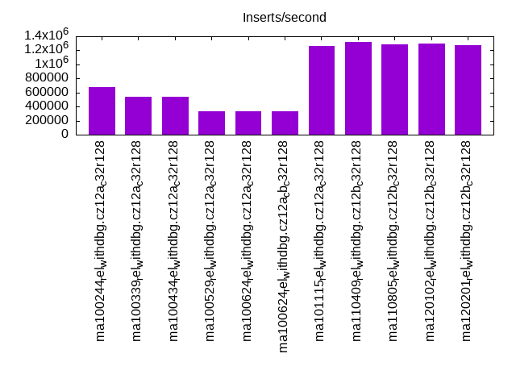
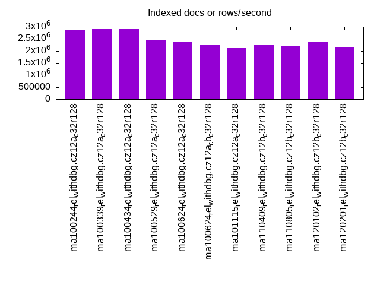
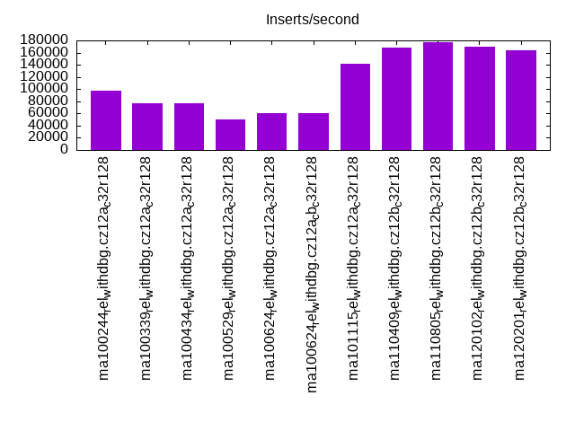
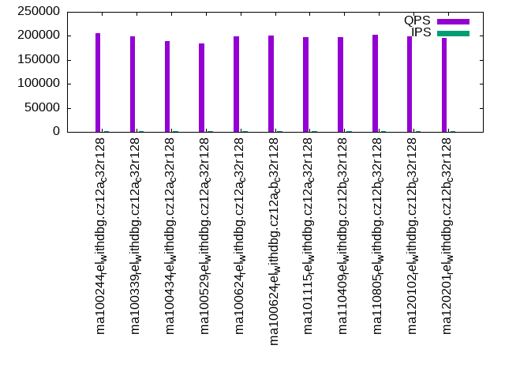
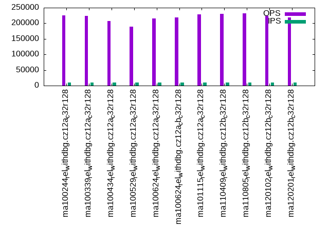
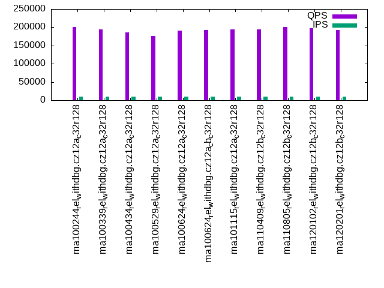
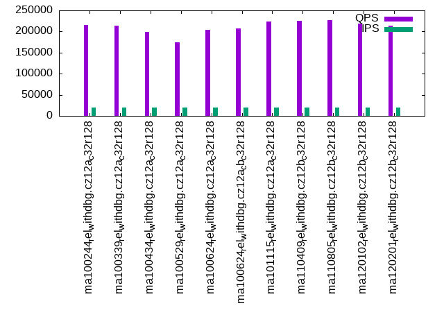
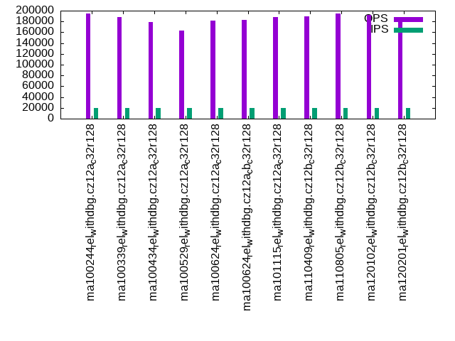

Introduction
This is a report for the insert benchmark with 200M docs and 20 client(s). It is generated by scripts (bash, awk, sed) and Tufte might not be impressed. An overview of the insert benchmark is here and a short update is here. Below, by DBMS, I mean DBMS+version.config. An example is my8020.c10b40 where my means MySQL, 8020 is version 8.0.20 and c10b40 is the name for the configuration file.
The test server has 48 cores, 128G RAM and 2 NVMe devices using SW RAID. The benchmark was run with 20 clients and there were 1 or 3 connections per client (1 for queries or inserts without rate limits, 1+1 for rate limited inserts+deletes). It uses 20 tables with a table per client. It loads 10M rows per table without secondary indexes, creates 3 secondary indexes per table, then inserts 40m+10m rows per table with a delete per insert to avoid growing the table. It then does 6 read+write tests for 3600s each that do queries as fast as possible with 100,100,500,500,1000,1000 inserts/s and the same for deletes/s per client concurrent with the queries. The database is cached. Clients and the DBMS share one server.
The tested DBMS are:
- ma100244_rel_withdbg.cz12a_c32r128 - MariaDB 10.2.44 with the cz12a_c32r128 config
- ma100339_rel_withdbg.cz12a_c32r128 - MariaDB 10.3.39 with the cz12a_c32r128 config
- ma100434_rel_withdbg.cz12a_c32r128 - MariaDB 10.4.34 with the cz12a_c32r128 config
- ma100529_rel_withdbg.cz12a_c32r128 - MariaDB 10.5.29 with the cz12a_c32r128 config
- ma100624_rel_withdbg.cz12a_c32r128 - MariaDB 10.6.24 with the cz12a_c32r128 config
- ma100624_rel_withdbg.cz12a_cb_c32r128 - MariaDB 10.6.24 with the cz12a_cb_c32r128 config that enables the InnoDB change buffer
- ma101115_rel_withdbg.cz12a_c32r128 - MariaDB 10.11.15 with the cz12a_c32r128 config
- ma110409_rel_withdbg.cz12b_c32r128 - MariaDB 11.4.9 with the cz12b_c32r128 config
- ma110805_rel_withdbg.cz12b_c32r128 - MariaDB 11.8.5 with the cz12b_c32r128 config
- ma120102_rel_withdbg.cz12b_c32r128 - MariaDB 12.1.2 with the cz12b_c32r128 config
- ma120201_rel_withdbg.cz12b_c32r128 - MariaDB 12.2.1 with the cz12b_c32r128 config
Contents
- Summary
- l.i0: load without secondary indexes
- l.x: create secondary indexes
- l.i1: continue load after secondary indexes created with 50 inserts per transaction
- l.i2: continue load after secondary indexes created with 5 inserts per transaction
- qr100.L1: range queries with 100 insert/s per client
- qp100.L2: point queries with 100 insert/s per client
- qr500.L3: range queries with 500 insert/s per client
- qp500.L4: point queries with 500 insert/s per client
- qr1000.L5: range queries with 1000 insert/s per client
- qp1000.L6: point queries with 1000 insert/s per client
Summary
The numbers are inserts/s for l.i0, l.i1 and l.i2, indexed docs (or rows) /s for l.x and queries/s for qr100, qp100 thru qr1000, qp1000" The values are the average rate over the entire test for inserts (IPS) and queries (QPS). The range of values for IPS and QPS is split into 3 parts: bottom 25%, middle 50%, top 25%. Values in the bottom 25% have a red background, values in the top 25% have a green background and values in the middle have no color. A gray background is used for values that can be ignored because the DBMS did not sustain the target insert rate. Red backgrounds are not used when the minimum value is within 80% of the max value.
| dbms | l.i0 | l.x | l.i1 | l.i2 | qr100 | qp100 | qr500 | qp500 | qr1000 | qp1000 |
|---|---|---|---|---|---|---|---|---|---|---|
| ma100244_rel_withdbg.cz12a_c32r128 | 680272 | 2857144 | 96770 | 78278 | 230525 | 205643 | 224948 | 200320 | 215631 | 194433 |
| ma100339_rel_withdbg.cz12a_c32r128 | 534759 | 2898552 | 76555 | 75729 | 228877 | 198598 | 222913 | 194457 | 213937 | 188077 |
| ma100434_rel_withdbg.cz12a_c32r128 | 534759 | 2898552 | 77146 | 75959 | 211760 | 189000 | 206764 | 185115 | 198932 | 178723 |
| ma100529_rel_withdbg.cz12a_c32r128 | 334448 | 2439026 | 50492 | 50188 | 197020 | 183622 | 188535 | 175367 | 175067 | 163487 |
| ma100624_rel_withdbg.cz12a_c32r128 | 334448 | 2352942 | 60182 | 53981 | 225734 | 199290 | 216133 | 191596 | 204175 | 181478 |
| ma100624_rel_withdbg.cz12a_cb_c32r128 | 335570 | 2272728 | 60173 | 53749 | 228260 | 200344 | 218408 | 192162 | 206653 | 182303 |
| ma101115_rel_withdbg.cz12a_c32r128 | 1257862 | 2105264 | 141618 | 131234 | 232593 | 196794 | 228673 | 193545 | 223060 | 187500 |
| ma110409_rel_withdbg.cz12b_c32r128 | 1324503 | 2247192 | 167961 | 136705 | 232916 | 197088 | 229794 | 194575 | 224560 | 189635 |
| ma110805_rel_withdbg.cz12b_c32r128 | 1290322 | 2222223 | 177502 | 137457 | 236009 | 202155 | 232311 | 199961 | 226998 | 194947 |
| ma120102_rel_withdbg.cz12b_c32r128 | 1298701 | 2352942 | 169960 | 136240 | 226535 | 199363 | 223269 | 196889 | 218810 | 191702 |
| ma120201_rel_withdbg.cz12b_c32r128 | 1273885 | 2150539 | 163499 | 133333 | 221663 | 195092 | 218905 | 192409 | 214165 | 187805 |
This table has relative throughput, throughput for the DBMS relative to the DBMS in the first line, using the absolute throughput from the previous table. Values less than 0.95 have a yellow background. Values greater than 1.05 have a blue background.
| dbms | l.i0 | l.x | l.i1 | l.i2 | qr100 | qp100 | qr500 | qp500 | qr1000 | qp1000 |
|---|---|---|---|---|---|---|---|---|---|---|
| ma100244_rel_withdbg.cz12a_c32r128 | 1.00 | 1.00 | 1.00 | 1.00 | 1.00 | 1.00 | 1.00 | 1.00 | 1.00 | 1.00 |
| ma100339_rel_withdbg.cz12a_c32r128 | 0.79 | 1.01 | 0.79 | 0.97 | 0.99 | 0.97 | 0.99 | 0.97 | 0.99 | 0.97 |
| ma100434_rel_withdbg.cz12a_c32r128 | 0.79 | 1.01 | 0.80 | 0.97 | 0.92 | 0.92 | 0.92 | 0.92 | 0.92 | 0.92 |
| ma100529_rel_withdbg.cz12a_c32r128 | 0.49 | 0.85 | 0.52 | 0.64 | 0.85 | 0.89 | 0.84 | 0.88 | 0.81 | 0.84 |
| ma100624_rel_withdbg.cz12a_c32r128 | 0.49 | 0.82 | 0.62 | 0.69 | 0.98 | 0.97 | 0.96 | 0.96 | 0.95 | 0.93 |
| ma100624_rel_withdbg.cz12a_cb_c32r128 | 0.49 | 0.80 | 0.62 | 0.69 | 0.99 | 0.97 | 0.97 | 0.96 | 0.96 | 0.94 |
| ma101115_rel_withdbg.cz12a_c32r128 | 1.85 | 0.74 | 1.46 | 1.68 | 1.01 | 0.96 | 1.02 | 0.97 | 1.03 | 0.96 |
| ma110409_rel_withdbg.cz12b_c32r128 | 1.95 | 0.79 | 1.74 | 1.75 | 1.01 | 0.96 | 1.02 | 0.97 | 1.04 | 0.98 |
| ma110805_rel_withdbg.cz12b_c32r128 | 1.90 | 0.78 | 1.83 | 1.76 | 1.02 | 0.98 | 1.03 | 1.00 | 1.05 | 1.00 |
| ma120102_rel_withdbg.cz12b_c32r128 | 1.91 | 0.82 | 1.76 | 1.74 | 0.98 | 0.97 | 0.99 | 0.98 | 1.01 | 0.99 |
| ma120201_rel_withdbg.cz12b_c32r128 | 1.87 | 0.75 | 1.69 | 1.70 | 0.96 | 0.95 | 0.97 | 0.96 | 0.99 | 0.97 |
This lists the average rate of inserts/s for the tests that do inserts concurrent with queries. For such tests the query rate is listed in the table above. The read+write tests are setup so that the insert rate should match the target rate every second. Cells that are not at least 95% of the target have a red background to indicate a failure to satisfy the target.
| dbms | qr100.L1 | qp100.L2 | qr500.L3 | qp500.L4 | qr1000.L5 | qp1000.L6 |
|---|---|---|---|---|---|---|
| ma100244_rel_withdbg.cz12a_c32r128 | 1987 | 1987 | 9936 | 9936 | 19873 | 19873 |
| ma100339_rel_withdbg.cz12a_c32r128 | 1987 | 1987 | 9936 | 9936 | 19873 | 19873 |
| ma100434_rel_withdbg.cz12a_c32r128 | 1987 | 1988 | 9936 | 9936 | 19873 | 19878 |
| ma100529_rel_withdbg.cz12a_c32r128 | 1988 | 1988 | 9936 | 9939 | 19873 | 19878 |
| ma100624_rel_withdbg.cz12a_c32r128 | 1988 | 1987 | 9936 | 9939 | 19873 | 19878 |
| ma100624_rel_withdbg.cz12a_cb_c32r128 | 1987 | 1987 | 9936 | 9936 | 19878 | 19873 |
| ma101115_rel_withdbg.cz12a_c32r128 | 1987 | 1987 | 9934 | 9934 | 19878 | 19873 |
| ma110409_rel_withdbg.cz12b_c32r128 | 1988 | 1988 | 9939 | 9936 | 19873 | 19873 |
| ma110805_rel_withdbg.cz12b_c32r128 | 1987 | 1987 | 9936 | 9936 | 19873 | 19873 |
| ma120102_rel_withdbg.cz12b_c32r128 | 1988 | 1988 | 9936 | 9936 | 19873 | 19873 |
| ma120201_rel_withdbg.cz12b_c32r128 | 1987 | 1987 | 9939 | 9936 | 19873 | 19873 |
| target | 2000 | 2000 | 10000 | 10000 | 20000 | 20000 |
l.i0
l.i0: load without secondary indexes. Graphs for performance per 1-second interval are here.
Average throughput:
Insert response time histogram: each cell has the percentage of responses that take <= the time in the header and max is the max response time in seconds. For the max column values in the top 25% of the range have a red background and in the bottom 25% of the range have a green background. The red background is not used when the min value is within 80% of the max value.
| dbms | 256us | 1ms | 4ms | 16ms | 64ms | 256ms | 1s | 4s | 16s | gt | max |
|---|---|---|---|---|---|---|---|---|---|---|---|
| ma100244_rel_withdbg.cz12a_c32r128 | 3.040 | 96.813 | 0.061 | 0.007 | 0.079 | 0.170 | |||||
| ma100339_rel_withdbg.cz12a_c32r128 | 1.544 | 97.865 | 0.409 | 0.008 | 0.093 | 0.082 | 0.619 | ||||
| ma100434_rel_withdbg.cz12a_c32r128 | 1.484 | 97.962 | 0.365 | 0.015 | 0.094 | 0.081 | 0.525 | ||||
| ma100529_rel_withdbg.cz12a_c32r128 | 1.212 | 4.023 | 94.541 | 0.114 | 0.085 | 0.025 | 0.528 | ||||
| ma100624_rel_withdbg.cz12a_c32r128 | 1.255 | 2.465 | 96.189 | 0.009 | 0.082 | 0.209 | |||||
| ma100624_rel_withdbg.cz12a_cb_c32r128 | 1.232 | 2.465 | 96.209 | 0.013 | 0.082 | 0.151 | |||||
| ma101115_rel_withdbg.cz12a_c32r128 | 14.839 | 85.013 | 0.057 | 0.009 | 0.083 | 0.204 | |||||
| ma110409_rel_withdbg.cz12b_c32r128 | 18.133 | 81.696 | 0.075 | 0.015 | 0.081 | 0.201 | |||||
| ma110805_rel_withdbg.cz12b_c32r128 | 16.755 | 83.074 | 0.080 | 0.012 | 0.079 | 0.172 | |||||
| ma120102_rel_withdbg.cz12b_c32r128 | 17.157 | 82.675 | 0.075 | 0.010 | 0.083 | 0.202 | |||||
| ma120201_rel_withdbg.cz12b_c32r128 | 16.564 | 83.259 | 0.084 | 0.014 | 0.078 | 0.001 | 0.312 |
Performance metrics for the DBMS listed above. Some are normalized by throughput, others are not. Legend for results is here.
ips qps rps rmbps wps wmbps rpq rkbpq wpi wkbpi csps cpups cspq cpupq dbgb1 dbgb2 rss maxop p50 p99 tag 680272 0 1 0.0 2679.2 191.2 0.000 0.000 0.004 0.288 88067 42.3 0.129 30 13.3 114.1 17.5 0.170 36261 31065 ma100244_rel_withdbg.cz12a_c32r128 534759 0 1 0.0 2341.0 164.2 0.000 0.000 0.004 0.315 80422 49.8 0.150 45 13.3 115.2 18.0 0.619 31866 200 ma100339_rel_withdbg.cz12a_c32r128 534759 0 1 0.0 2314.9 162.9 0.000 0.000 0.004 0.312 80445 49.8 0.150 45 13.3 115.2 NA 0.525 31976 200 ma100434_rel_withdbg.cz12a_c32r128 334448 0 1 0.0 4723.0 149.2 0.000 0.000 0.014 0.457 920006 49.7 2.751 71 13.3 115.2 17.5 0.528 17681 2897 ma100529_rel_withdbg.cz12a_c32r128 334448 0 0 0.0 1762.8 87.1 0.000 0.000 0.005 0.267 922252 51.7 2.758 74 13.3 114.8 16.0 0.209 17286 14983 ma100624_rel_withdbg.cz12a_c32r128 335570 0 4 0.2 1560.4 84.4 0.000 0.000 0.005 0.258 927799 51.8 2.765 74 13.3 114.9 16.1 0.151 17481 15483 ma100624_rel_withdbg.cz12a_cb_c32r128 1257862 0 2 0.0 4569.9 285.5 0.000 0.000 0.004 0.232 188711 42.9 0.150 16 13.3 114.1 14.4 0.204 73220 62333 ma101115_rel_withdbg.cz12a_c32r128 1324503 0 2 0.0 4618.9 298.7 0.000 0.000 0.003 0.231 201154 44.0 0.152 16 13.3 114.1 15.0 0.201 77916 64250 ma110409_rel_withdbg.cz12b_c32r128 1290322 0 2 0.0 4619.9 292.4 0.000 0.000 0.004 0.232 198974 43.8 0.154 16 13.3 114.1 14.6 0.172 74817 55940 ma110805_rel_withdbg.cz12b_c32r128 1298701 0 2 0.0 4642.4 293.4 0.000 0.000 0.004 0.231 198647 43.3 0.153 16 13.3 114.1 14.7 0.202 75419 55739 ma120102_rel_withdbg.cz12b_c32r128 1273885 0 2 0.0 4601.6 290.8 0.000 0.000 0.004 0.234 198329 43.9 0.156 17 13.3 114.1 14.5 0.312 71521 64031 ma120201_rel_withdbg.cz12b_c32r128
Average values from iostat.
r/s rkB/s rrqm/s %rrqm r_await rareq-s w/s wkB/s wrqm/s %wrqm w_await wareq-s d/s dkB/s drqm/s %drqm d_await dareq-s f/s f_await aqu-sz %util 0.014 0.054 0.000 0.000 0.017 0.271 2495.9 195836 196.9 8.375 5.267 83.68 0.000 0.000 0.000 0.000 0.000 0.000 0.000 0.000 12.23 15.72 ma100244_rel_withdbg.cz12a_c32r128 0.051 0.363 0.000 0.000 0.012 0.587 2175.9 168241 179.2 8.751 4.050 84.59 0.000 0.000 0.000 0.000 0.000 0.000 0.000 0.000 7.979 13.26 ma100339_rel_withdbg.cz12a_c32r128 0.136 0.629 0.000 0.000 0.051 1.049 2148.7 166841 180.2 8.787 5.076 84.05 0.000 0.000 0.000 0.000 0.000 0.000 0.000 0.000 9.730 13.71 ma100434_rel_withdbg.cz12a_c32r128 0.052 0.307 0.000 0.000 0.022 0.839 4264.0 152816 474.6 10.01 0.747 35.69 0.000 0.000 0.000 0.000 0.000 0.000 0.000 0.000 3.266 14.15 ma100529_rel_withdbg.cz12a_c32r128 0.015 0.618 0.087 0.716 0.002 0.344 1661.0 89268.1 111.4 10.38 4.116 85.47 0.000 0.000 0.000 0.000 0.000 0.000 0.000 0.000 4.215 7.333 ma100624_rel_withdbg.cz12a_c32r128 0.602 56.52 0.711 0.483 0.049 2.555 1463.9 86499.4 111.7 10.05 3.196 80.66 0.000 0.000 0.000 0.000 0.000 0.000 0.000 0.000 3.480 7.361 ma100624_rel_withdbg.cz12a_cb_c32r128 0.056 1.600 0.138 2.292 0.035 1.109 4259.0 292387 323.0 10.23 8.291 87.69 0.000 0.000 0.000 0.000 0.000 0.000 0.000 0.000 26.29 21.28 ma101115_rel_withdbg.cz12a_c32r128 0.120 0.853 0.000 0.000 0.117 0.970 4284.0 305944 348.9 10.77 6.596 88.99 0.000 0.000 0.000 0.000 0.000 0.000 0.000 0.000 22.13 21.65 ma110409_rel_withdbg.cz12b_c32r128 0.071 0.284 0.000 0.000 0.097 0.903 4281.5 298688 343.8 10.60 5.570 87.66 0.000 0.000 0.000 0.000 0.000 0.000 0.000 0.000 19.07 20.57 ma110805_rel_withdbg.cz12b_c32r128 0.071 0.310 0.000 0.000 0.091 1.161 4316.9 300505 340.0 10.34 5.611 87.36 0.000 0.000 0.000 0.000 0.000 0.000 0.000 0.000 19.14 20.95 ma120102_rel_withdbg.cz12b_c32r128 0.142 0.568 0.000 0.000 0.218 2.065 4268.2 297833 347.3 10.65 5.634 87.75 0.000 0.000 0.000 0.000 0.000 0.000 0.000 0.000 19.29 20.46 ma120201_rel_withdbg.cz12b_c32r128
l.x
l.x: create secondary indexes.
Average throughput:
Performance metrics for the DBMS listed above. Some are normalized by throughput, others are not. Legend for results is here.
ips qps rps rmbps wps wmbps rpq rkbpq wpi wkbpi csps cpups cspq cpupq dbgb1 dbgb2 rss maxop p50 p99 tag 2857144 0 2 0.0 20374.0 1996.9 0.000 0.000 0.007 0.716 135857 27.1 0.048 5 30.4 131.2 30.1 0.001 NA NA ma100244_rel_withdbg.cz12a_c32r128 2898552 0 2 0.0 20575.8 2012.7 0.000 0.000 0.007 0.711 153113 32.3 0.053 5 30.4 132.3 31.4 0.003 NA NA ma100339_rel_withdbg.cz12a_c32r128 2898552 0 2 0.0 20514.4 2010.6 0.000 0.000 0.007 0.710 164942 32.5 0.057 5 30.0 131.9 NA 0.004 NA NA ma100434_rel_withdbg.cz12a_c32r128 2439026 0 2 0.0 22096.4 1797.6 0.000 0.000 0.009 0.755 187423 28.6 0.077 6 30.0 131.9 25.3 0.004 NA NA ma100529_rel_withdbg.cz12a_c32r128 2352942 0 1 0.0 16764.1 1619.2 0.000 0.000 0.007 0.705 203802 27.7 0.087 6 28.1 129.6 23.5 0.008 NA NA ma100624_rel_withdbg.cz12a_c32r128 2272728 0 2 0.0 17311.9 1619.5 0.000 0.000 0.008 0.730 211861 27.6 0.093 6 28.1 129.8 23.7 0.007 NA NA ma100624_rel_withdbg.cz12a_cb_c32r128 2105264 0 2 0.0 17115.9 1471.3 0.000 0.000 0.008 0.716 52165 23.0 0.025 5 28.1 129.0 29.7 0.001 NA NA ma101115_rel_withdbg.cz12a_c32r128 2247192 0 2 0.0 17981.2 1551.9 0.000 0.000 0.008 0.707 53493 24.2 0.024 5 28.1 129.0 30.5 0.001 NA NA ma110409_rel_withdbg.cz12b_c32r128 2222223 0 2 0.0 18037.4 1551.4 0.000 0.000 0.008 0.715 52730 24.4 0.024 5 28.1 129.0 30.4 0.078 NA NA ma110805_rel_withdbg.cz12b_c32r128 2352942 0 2 0.0 18608.8 1636.3 0.000 0.000 0.008 0.712 52815 24.6 0.022 5 28.1 129.0 23.1 0.001 NA NA ma120102_rel_withdbg.cz12b_c32r128 2150539 0 2 0.0 17206.1 1472.9 0.000 0.000 0.008 0.701 53106 23.0 0.025 5 28.1 129.0 29.6 0.001 NA NA ma120201_rel_withdbg.cz12b_c32r128
Average values from iostat.
r/s rkB/s rrqm/s %rrqm r_await rareq-s w/s wkB/s wrqm/s %wrqm w_await wareq-s d/s dkB/s drqm/s %drqm d_await dareq-s f/s f_await aqu-sz %util 0.624 36.52 0.000 0.000 0.128 23.85 16764.1 1658060 0.000 0.000 10.87 101.8 0.000 0.000 0.000 0.000 0.000 0.000 0.000 0.000 230.4 91.44 ma100624_rel_withdbg.cz12a_c32r128 2.129 9.694 0.000 0.000 0.472 4.036 17311.9 1658337 0.000 0.000 12.07 97.01 0.000 0.000 0.000 0.000 0.000 0.000 0.000 0.000 255.7 93.55 ma100624_rel_withdbg.cz12a_cb_c32r128 2.053 8.632 0.000 0.000 0.378 4.141 17115.9 1506636 0.000 0.000 12.07 83.13 0.000 0.000 0.000 0.000 0.000 0.000 0.000 0.000 243.6 92.53 ma101115_rel_withdbg.cz12a_c32r128 1.900 15.20 0.000 0.000 0.568 6.063 17981.2 1589139 0.000 0.000 10.06 82.00 0.000 0.000 0.000 0.000 0.000 0.000 0.000 0.000 221.4 90.04 ma110409_rel_withdbg.cz12b_c32r128 1.900 9.200 0.000 0.000 2.516 4.054 18037.4 1588588 0.000 0.000 10.82 82.24 0.000 0.000 0.000 0.000 0.000 0.000 0.000 0.000 231.0 91.13 ma110805_rel_withdbg.cz12b_c32r128 2.400 35.91 0.000 0.000 0.935 9.872 18608.8 1675582 0.000 0.000 9.844 83.69 0.000 0.000 0.000 0.000 0.000 0.000 0.000 0.000 222.5 91.22 ma120102_rel_withdbg.cz12b_c32r128 2.242 23.92 0.000 0.000 0.771 7.832 17206.1 1508210 0.000 0.000 13.07 82.69 0.000 0.000 0.000 0.000 0.000 0.000 0.000 0.000 260.2 90.69 ma120201_rel_withdbg.cz12b_c32r128
l.i1
l.i1: continue load after secondary indexes created with 50 inserts per transaction. Graphs for performance per 1-second interval are here.
Average throughput:
Insert response time histogram: each cell has the percentage of responses that take <= the time in the header and max is the max response time in seconds. For the max column values in the top 25% of the range have a red background and in the bottom 25% of the range have a green background. The red background is not used when the min value is within 80% of the max value.
| dbms | 256us | 1ms | 4ms | 16ms | 64ms | 256ms | 1s | 4s | 16s | gt | max |
|---|---|---|---|---|---|---|---|---|---|---|---|
| ma100244_rel_withdbg.cz12a_c32r128 | nonzero | 0.145 | 98.448 | 0.149 | 0.348 | 0.910 | 0.385 | ||||
| ma100339_rel_withdbg.cz12a_c32r128 | 0.001 | 0.960 | 96.869 | 0.345 | 0.375 | 1.450 | 0.381 | ||||
| ma100434_rel_withdbg.cz12a_c32r128 | nonzero | 0.850 | 97.010 | 0.309 | 0.375 | 1.457 | 0.372 | ||||
| ma100529_rel_withdbg.cz12a_c32r128 | nonzero | 0.043 | 70.000 | 27.916 | 0.216 | 1.826 | 0.533 | ||||
| ma100624_rel_withdbg.cz12a_c32r128 | nonzero | 0.104 | 82.588 | 17.085 | 0.223 | 0.248 | |||||
| ma100624_rel_withdbg.cz12a_cb_c32r128 | 0.061 | 82.785 | 16.929 | 0.224 | nonzero | 0.267 | |||||
| ma101115_rel_withdbg.cz12a_c32r128 | nonzero | 28.095 | 62.701 | 8.957 | 0.247 | nonzero | 0.305 | ||||
| ma110409_rel_withdbg.cz12b_c32r128 | 0.005 | 49.511 | 46.539 | 3.743 | 0.201 | nonzero | 0.413 | ||||
| ma110805_rel_withdbg.cz12b_c32r128 | 0.012 | 59.424 | 37.022 | 3.354 | 0.187 | nonzero | 0.510 | ||||
| ma120102_rel_withdbg.cz12b_c32r128 | 0.003 | 46.466 | 49.750 | 3.605 | 0.176 | nonzero | 0.425 | ||||
| ma120201_rel_withdbg.cz12b_c32r128 | 0.003 | 40.173 | 56.081 | 3.581 | 0.162 | nonzero | 0.454 |
Delete response time histogram: each cell has the percentage of responses that take <= the time in the header and max is the max response time in seconds. For the max column values in the top 25% of the range have a red background and in the bottom 25% of the range have a green background. The red background is not used when the min value is within 80% of the max value.
| dbms | 256us | 1ms | 4ms | 16ms | 64ms | 256ms | 1s | 4s | 16s | gt | max |
|---|---|---|---|---|---|---|---|---|---|---|---|
| ma100244_rel_withdbg.cz12a_c32r128 | 0.001 | 0.183 | 98.441 | 0.114 | 0.374 | 0.886 | 0.383 | ||||
| ma100339_rel_withdbg.cz12a_c32r128 | 0.005 | 1.530 | 96.303 | 0.339 | 0.520 | 1.304 | 0.381 | ||||
| ma100434_rel_withdbg.cz12a_c32r128 | 0.001 | 1.424 | 96.431 | 0.314 | 0.516 | 1.314 | 0.378 | ||||
| ma100529_rel_withdbg.cz12a_c32r128 | 0.001 | 0.056 | 67.414 | 30.484 | 0.235 | 1.810 | 0.479 | ||||
| ma100624_rel_withdbg.cz12a_c32r128 | nonzero | 0.107 | 83.978 | 15.712 | 0.203 | 0.248 | |||||
| ma100624_rel_withdbg.cz12a_cb_c32r128 | nonzero | 0.068 | 84.220 | 15.511 | 0.200 | nonzero | 0.258 | ||||
| ma101115_rel_withdbg.cz12a_c32r128 | 0.067 | 29.115 | 61.684 | 8.893 | 0.241 | nonzero | 0.297 | ||||
| ma110409_rel_withdbg.cz12b_c32r128 | 0.070 | 40.233 | 55.579 | 3.908 | 0.209 | 0.001 | 0.413 | ||||
| ma110805_rel_withdbg.cz12b_c32r128 | 0.049 | 46.563 | 49.646 | 3.542 | 0.199 | 0.001 | 0.508 | ||||
| ma120102_rel_withdbg.cz12b_c32r128 | 0.018 | 37.832 | 58.184 | 3.783 | 0.183 | nonzero | 0.424 | ||||
| ma120201_rel_withdbg.cz12b_c32r128 | 0.013 | 28.877 | 67.071 | 3.867 | 0.171 | nonzero | 0.453 |
Performance metrics for the DBMS listed above. Some are normalized by throughput, others are not. Legend for results is here.
ips qps rps rmbps wps wmbps rpq rkbpq wpi wkbpi csps cpups cspq cpupq dbgb1 dbgb2 rss maxop p50 p99 tag 96770 0 0 0.0 4998.7 198.9 0.000 0.000 0.052 2.105 65342 68.3 0.675 339 48.1 150.8 53.4 0.385 6597 150 ma100244_rel_withdbg.cz12a_c32r128 76555 0 0 0.0 4439.4 184.8 0.000 0.000 0.058 2.472 147560 60.2 1.928 377 45.9 148.1 51.6 0.381 5494 150 ma100339_rel_withdbg.cz12a_c32r128 77146 0 2 0.1 4401.4 183.9 0.000 0.001 0.057 2.441 141195 60.3 1.830 375 46.0 148.1 NA 0.372 5544 150 ma100434_rel_withdbg.cz12a_c32r128 50492 0 0 0.0 10950.3 326.4 0.000 0.000 0.217 6.619 893045 53.6 17.687 510 44.8 147.1 44.9 0.533 3296 150 ma100529_rel_withdbg.cz12a_c32r128 60182 0 1 0.0 8213.1 254.6 0.000 0.000 0.136 4.332 854806 68.3 14.204 545 41.7 143.8 43.8 0.248 2997 2797 ma100624_rel_withdbg.cz12a_c32r128 60173 0 1 0.1 8174.2 254.1 0.000 0.001 0.136 4.325 862667 67.9 14.336 542 41.7 143.9 43.8 0.267 2997 2748 ma100624_rel_withdbg.cz12a_cb_c32r128 141618 0 1 0.0 10277.4 358.4 0.000 0.000 0.073 2.591 236173 56.4 1.668 191 43.4 145.5 45.7 0.305 7092 6093 ma101115_rel_withdbg.cz12a_c32r128 167961 0 1 0.0 10644.1 381.2 0.000 0.000 0.063 2.324 177865 59.8 1.059 171 43.7 145.8 46.0 0.413 8391 7094 ma110409_rel_withdbg.cz12b_c32r128 177502 0 0 0.0 10706.3 388.5 0.000 0.000 0.060 2.241 182078 60.4 1.026 163 43.7 145.9 46.1 0.510 8843 7542 ma110805_rel_withdbg.cz12b_c32r128 169960 0 1 0.0 10657.1 382.7 0.000 0.000 0.063 2.306 181614 61.0 1.069 172 43.7 145.9 46.0 0.425 8491 7242 ma120102_rel_withdbg.cz12b_c32r128 163499 0 1 0.0 10602.9 378.0 0.000 0.000 0.065 2.368 176747 61.8 1.081 181 43.6 145.7 45.9 0.454 8141 6945 ma120201_rel_withdbg.cz12b_c32r128
Average values from iostat.
r/s rkB/s rrqm/s %rrqm r_await rareq-s w/s wkB/s wrqm/s %wrqm w_await wareq-s d/s dkB/s drqm/s %drqm d_await dareq-s f/s f_await aqu-sz %util 0.107 1.067 0.003 0.112 0.033 1.991 4865.0 203782 166.3 3.624 0.684 46.84 0.000 0.000 0.000 0.000 0.000 0.000 0.000 0.000 2.386 18.79 ma100244_rel_withdbg.cz12a_c32r128 0.061 0.793 0.031 0.180 0.020 0.594 4336.9 189341 136.8 3.631 0.806 53.19 0.000 0.000 0.000 0.000 0.000 0.000 0.000 0.000 2.165 15.95 ma100339_rel_withdbg.cz12a_c32r128 0.516 16.14 0.013 0.037 0.044 4.602 4299.1 188436 136.4 3.686 0.924 53.89 0.000 0.000 0.000 0.000 0.000 0.000 0.000 0.000 2.356 15.72 ma100434_rel_withdbg.cz12a_c32r128 0.176 2.347 0.012 0.095 0.025 2.038 10916.0 334269 57.84 0.534 0.107 30.60 0.000 0.000 0.000 0.000 0.000 0.000 0.000 0.000 1.147 25.00 ma100529_rel_withdbg.cz12a_c32r128 0.178 2.498 0.023 0.080 0.025 1.848 8156.3 260793 77.34 1.015 0.199 32.11 0.000 0.000 0.000 0.000 0.000 0.000 0.000 0.000 1.608 11.51 ma100624_rel_withdbg.cz12a_c32r128 0.326 15.51 0.016 0.097 0.035 2.341 8141.7 260323 54.35 0.744 0.212 32.18 0.000 0.000 0.000 0.000 0.000 0.000 0.000 0.000 1.682 11.45 ma100624_rel_withdbg.cz12a_cb_c32r128 0.114 1.395 0.056 0.527 0.032 0.980 10181.1 367036 118.2 1.143 0.486 35.96 0.000 0.000 0.000 0.000 0.000 0.000 0.000 0.000 5.014 16.09 ma101115_rel_withdbg.cz12a_c32r128 0.134 1.753 0.019 0.163 0.049 2.011 10387.8 390386 278.9 2.550 0.600 37.48 0.000 0.000 0.000 0.000 0.000 0.000 0.000 0.000 6.308 18.13 ma110409_rel_withdbg.cz12b_c32r128 0.097 0.996 0.003 0.030 0.036 1.706 10442.3 397917 287.2 2.616 0.617 37.99 0.000 0.000 0.000 0.000 0.000 0.000 0.000 0.000 6.545 18.34 ma110805_rel_withdbg.cz12b_c32r128 0.160 1.561 0.003 0.093 0.066 2.746 10398.7 391941 283.2 2.588 0.591 37.58 0.000 0.000 0.000 0.000 0.000 0.000 0.000 0.000 6.234 18.11 ma120102_rel_withdbg.cz12b_c32r128 0.341 13.55 0.111 0.054 0.069 3.493 10352.5 387195 272.9 2.512 0.584 37.28 0.000 0.000 0.000 0.000 0.000 0.000 0.000 0.000 6.152 18.09 ma120201_rel_withdbg.cz12b_c32r128
l.i2
l.i2: continue load after secondary indexes created with 5 inserts per transaction. Graphs for performance per 1-second interval are here.
Average throughput:

Insert response time histogram: each cell has the percentage of responses that take <= the time in the header and max is the max response time in seconds. For the max column values in the top 25% of the range have a red background and in the bottom 25% of the range have a green background. The red background is not used when the min value is within 80% of the max value.
| dbms | 256us | 1ms | 4ms | 16ms | 64ms | 256ms | 1s | 4s | 16s | gt | max |
|---|---|---|---|---|---|---|---|---|---|---|---|
| ma100244_rel_withdbg.cz12a_c32r128 | 0.020 | 52.562 | 46.357 | 0.502 | 0.548 | 0.009 | 0.188 | ||||
| ma100339_rel_withdbg.cz12a_c32r128 | 0.057 | 63.889 | 34.477 | 0.531 | 1.036 | 0.010 | 0.169 | ||||
| ma100434_rel_withdbg.cz12a_c32r128 | 0.060 | 63.954 | 34.381 | 0.571 | 1.024 | 0.010 | 0.167 | ||||
| ma100529_rel_withdbg.cz12a_c32r128 | 0.013 | 3.013 | 95.423 | 0.164 | 1.378 | 0.010 | 0.155 | ||||
| ma100624_rel_withdbg.cz12a_c32r128 | 0.009 | 2.208 | 92.656 | 5.017 | 0.100 | 0.010 | 0.169 | ||||
| ma100624_rel_withdbg.cz12a_cb_c32r128 | 0.006 | 2.075 | 92.697 | 5.103 | 0.110 | 0.010 | 0.159 | ||||
| ma101115_rel_withdbg.cz12a_c32r128 | 0.305 | 92.982 | 5.970 | 0.642 | 0.091 | 0.010 | 0.184 | ||||
| ma110409_rel_withdbg.cz12b_c32r128 | 0.304 | 91.470 | 8.137 | 0.054 | 0.025 | 0.010 | 0.189 | ||||
| ma110805_rel_withdbg.cz12b_c32r128 | 0.341 | 91.641 | 7.940 | 0.048 | 0.020 | 0.010 | 0.213 | ||||
| ma120102_rel_withdbg.cz12b_c32r128 | 0.238 | 91.196 | 8.473 | 0.062 | 0.021 | 0.010 | 0.168 | ||||
| ma120201_rel_withdbg.cz12b_c32r128 | 0.248 | 90.059 | 9.601 | 0.060 | 0.022 | 0.010 | 0.183 |
Delete response time histogram: each cell has the percentage of responses that take <= the time in the header and max is the max response time in seconds. For the max column values in the top 25% of the range have a red background and in the bottom 25% of the range have a green background. The red background is not used when the min value is within 80% of the max value.
| dbms | 256us | 1ms | 4ms | 16ms | 64ms | 256ms | 1s | 4s | 16s | gt | max |
|---|---|---|---|---|---|---|---|---|---|---|---|
| ma100244_rel_withdbg.cz12a_c32r128 | 0.028 | 44.488 | 54.439 | 0.486 | 0.549 | 0.010 | 0.187 | ||||
| ma100339_rel_withdbg.cz12a_c32r128 | 0.080 | 58.623 | 39.719 | 0.530 | 1.038 | 0.010 | 0.169 | ||||
| ma100434_rel_withdbg.cz12a_c32r128 | 0.093 | 58.618 | 39.682 | 0.572 | 1.025 | 0.010 | 0.169 | ||||
| ma100529_rel_withdbg.cz12a_c32r128 | 0.015 | 2.102 | 96.331 | 0.162 | 1.380 | 0.010 | 0.155 | ||||
| ma100624_rel_withdbg.cz12a_c32r128 | 0.011 | 2.522 | 92.357 | 5.000 | 0.099 | 0.010 | 0.169 | ||||
| ma100624_rel_withdbg.cz12a_cb_c32r128 | 0.006 | 2.462 | 92.329 | 5.084 | 0.109 | 0.010 | 0.159 | ||||
| ma101115_rel_withdbg.cz12a_c32r128 | 0.412 | 93.378 | 5.473 | 0.637 | 0.090 | 0.010 | 0.184 | ||||
| ma110409_rel_withdbg.cz12b_c32r128 | 0.292 | 91.534 | 8.085 | 0.054 | 0.025 | 0.010 | 0.189 | ||||
| ma110805_rel_withdbg.cz12b_c32r128 | 0.312 | 91.648 | 7.962 | 0.049 | 0.020 | 0.010 | 0.213 | ||||
| ma120102_rel_withdbg.cz12b_c32r128 | 0.209 | 91.220 | 8.478 | 0.061 | 0.021 | 0.010 | 0.168 | ||||
| ma120201_rel_withdbg.cz12b_c32r128 | 0.203 | 89.996 | 9.709 | 0.060 | 0.022 | 0.010 | 0.183 |
Performance metrics for the DBMS listed above. Some are normalized by throughput, others are not. Legend for results is here.
ips qps rps rmbps wps wmbps rpq rkbpq wpi wkbpi csps cpups cspq cpupq dbgb1 dbgb2 rss maxop p50 p99 tag 78278 0 1 0.0 6222.4 252.0 0.000 0.000 0.079 3.296 392126 55.7 5.009 342 48.1 150.8 54.1 0.188 4141 180 ma100244_rel_withdbg.cz12a_c32r128 75729 0 0 0.0 5523.0 231.5 0.000 0.000 0.073 3.130 392645 50.8 5.185 322 45.9 148.1 51.6 0.169 3726 185 ma100339_rel_withdbg.cz12a_c32r128 75959 0 1 0.0 5491.0 228.2 0.000 0.000 0.072 3.076 414754 51.0 5.460 322 46.0 148.1 NA 0.167 3746 180 ma100434_rel_withdbg.cz12a_c32r128 50188 0 0 0.0 10516.2 327.3 0.000 0.000 0.210 6.679 1121090 51.9 22.338 496 44.8 147.1 44.9 0.155 2632 185 ma100529_rel_withdbg.cz12a_c32r128 53981 0 1 0.0 6902.2 231.1 0.000 0.000 0.128 4.383 1136000 58.1 21.044 517 41.7 143.8 43.8 0.169 2738 734 ma100624_rel_withdbg.cz12a_c32r128 53749 0 0 0.0 6869.4 230.7 0.000 0.000 0.128 4.395 1139884 58.0 21.208 518 41.7 143.9 43.8 0.159 2727 729 ma100624_rel_withdbg.cz12a_cb_c32r128 131234 0 0 0.0 10582.3 394.6 0.000 0.000 0.081 3.079 928439 58.9 7.075 215 43.4 145.5 45.7 0.184 6733 1309 ma101115_rel_withdbg.cz12a_c32r128 136705 0 0 0.0 10662.2 401.3 0.000 0.000 0.078 3.006 890386 60.6 6.513 213 43.7 145.8 46.1 0.189 6933 2502 ma110409_rel_withdbg.cz12b_c32r128 137457 0 0 0.0 10670.7 402.2 0.000 0.000 0.078 2.996 901523 60.3 6.559 211 43.7 145.9 46.1 0.213 6933 5579 ma110805_rel_withdbg.cz12b_c32r128 136240 0 1 0.0 10668.8 401.3 0.000 0.000 0.078 3.016 903676 60.4 6.633 213 43.7 145.9 46.0 0.168 6892 2432 ma120102_rel_withdbg.cz12b_c32r128 133333 0 1 0.0 10623.9 397.8 0.000 0.000 0.080 3.055 882060 60.1 6.615 216 43.6 145.7 45.9 0.183 6753 4051 ma120201_rel_withdbg.cz12b_c32r128
Average values from iostat.
r/s rkB/s rrqm/s %rrqm r_await rareq-s w/s wkB/s wrqm/s %wrqm w_await wareq-s d/s dkB/s drqm/s %drqm d_await dareq-s f/s f_await aqu-sz %util 0.141 1.883 0.000 0.000 0.031 2.820 6062.0 258128 190.3 3.134 0.462 43.64 0.000 0.000 0.000 0.000 0.000 0.000 0.000 0.000 2.613 21.51 ma100244_rel_withdbg.cz12a_c32r128 0.050 0.697 0.030 0.126 0.022 0.608 5387.0 237136 162.1 3.059 0.475 45.70 0.000 0.000 0.000 0.000 0.000 0.000 0.000 0.000 2.371 18.66 ma100339_rel_withdbg.cz12a_c32r128 0.424 4.944 0.000 0.000 0.055 5.471 5354.6 233763 162.4 3.065 0.443 44.98 0.000 0.000 0.000 0.000 0.000 0.000 0.000 0.000 2.232 18.38 ma100434_rel_withdbg.cz12a_c32r128 0.148 1.751 0.021 0.104 0.031 2.676 10493.7 335277 44.97 0.424 0.139 31.93 0.000 0.000 0.000 0.000 0.000 0.000 0.000 0.000 1.483 24.34 ma100529_rel_withdbg.cz12a_c32r128 0.272 3.171 0.047 0.207 0.038 3.675 6852.1 236697 70.87 1.043 0.229 34.72 0.000 0.000 0.000 0.000 0.000 0.000 0.000 0.000 1.575 10.73 ma100624_rel_withdbg.cz12a_c32r128 0.141 1.581 0.000 0.000 0.025 2.235 6839.8 236314 51.80 0.769 0.234 34.70 0.000 0.000 0.000 0.000 0.000 0.000 0.000 0.000 1.612 10.69 ma100624_rel_withdbg.cz12a_cb_c32r128 0.159 1.036 0.000 0.000 0.010 0.268 10476.1 404168 127.6 1.200 0.445 38.55 0.000 0.000 0.000 0.000 0.000 0.000 0.000 0.000 4.700 16.83 ma101115_rel_withdbg.cz12a_c32r128 0.042 0.479 0.000 0.000 0.034 0.685 10544.8 411052 138.9 1.295 0.502 38.95 0.000 0.000 0.000 0.000 0.000 0.000 0.000 0.000 5.331 18.22 ma110409_rel_withdbg.cz12b_c32r128 0.173 1.193 0.000 0.000 0.026 1.234 10550.2 411932 143.3 1.334 0.455 39.01 0.000 0.000 0.000 0.000 0.000 0.000 0.000 0.000 4.832 17.91 ma110805_rel_withdbg.cz12b_c32r128 0.147 2.059 0.009 0.296 0.059 3.884 10543.7 411042 147.1 1.370 0.464 38.97 0.000 0.000 0.000 0.000 0.000 0.000 0.000 0.000 4.912 17.96 ma120102_rel_withdbg.cz12b_c32r128 0.287 2.443 0.000 0.000 0.075 3.060 10508.0 407394 137.4 1.287 0.488 38.76 0.000 0.000 0.000 0.000 0.000 0.000 0.000 0.000 5.164 17.85 ma120201_rel_withdbg.cz12b_c32r128
qr100.L1
qr100.L1: range queries with 100 insert/s per client. Graphs for performance per 1-second interval are here.
Average throughput:
Query response time histogram: each cell has the percentage of responses that take <= the time in the header and max is the max response time in seconds. For max values in the top 25% of the range have a red background and in the bottom 25% of the range have a green background. The red background is not used when the min value is within 80% of the max value.
| dbms | 256us | 1ms | 4ms | 16ms | 64ms | 256ms | 1s | 4s | 16s | gt | max |
|---|---|---|---|---|---|---|---|---|---|---|---|
| ma100244_rel_withdbg.cz12a_c32r128 | 99.981 | 0.014 | 0.005 | nonzero | nonzero | 0.019 | |||||
| ma100339_rel_withdbg.cz12a_c32r128 | 99.982 | 0.013 | 0.004 | nonzero | nonzero | 0.026 | |||||
| ma100434_rel_withdbg.cz12a_c32r128 | 99.981 | 0.015 | 0.004 | nonzero | nonzero | 0.028 | |||||
| ma100529_rel_withdbg.cz12a_c32r128 | 99.960 | 0.039 | nonzero | nonzero | 0.005 | ||||||
| ma100624_rel_withdbg.cz12a_c32r128 | 99.976 | 0.024 | nonzero | nonzero | 0.013 | ||||||
| ma100624_rel_withdbg.cz12a_cb_c32r128 | 99.974 | 0.025 | nonzero | nonzero | 0.013 | ||||||
| ma101115_rel_withdbg.cz12a_c32r128 | 99.993 | 0.005 | 0.002 | nonzero | 0.010 | ||||||
| ma110409_rel_withdbg.cz12b_c32r128 | 99.995 | 0.003 | 0.002 | nonzero | 0.011 | ||||||
| ma110805_rel_withdbg.cz12b_c32r128 | 99.995 | 0.003 | 0.002 | nonzero | 0.012 | ||||||
| ma120102_rel_withdbg.cz12b_c32r128 | 99.995 | 0.003 | 0.002 | nonzero | 0.012 | ||||||
| ma120201_rel_withdbg.cz12b_c32r128 | 99.994 | 0.004 | 0.002 | nonzero | 0.010 |
Insert response time histogram: each cell has the percentage of responses that take <= the time in the header and max is the max response time in seconds. For max values in the top 25% of the range have a red background and in the bottom 25% of the range have a green background. The red background is not used when the min value is within 80% of the max value.
| dbms | 256us | 1ms | 4ms | 16ms | 64ms | 256ms | 1s | 4s | 16s | gt | max |
|---|---|---|---|---|---|---|---|---|---|---|---|
| ma100244_rel_withdbg.cz12a_c32r128 | 96.165 | 3.827 | 0.008 | 0.025 | |||||||
| ma100339_rel_withdbg.cz12a_c32r128 | 98.056 | 1.942 | 0.003 | 0.028 | |||||||
| ma100434_rel_withdbg.cz12a_c32r128 | 97.629 | 2.367 | 0.003 | 0.027 | |||||||
| ma100529_rel_withdbg.cz12a_c32r128 | 5.609 | 91.976 | 2.415 | 0.035 | |||||||
| ma100624_rel_withdbg.cz12a_c32r128 | 0.030 | 19.670 | 79.608 | 0.692 | 0.026 | ||||||
| ma100624_rel_withdbg.cz12a_cb_c32r128 | 8.097 | 90.817 | 1.085 | 0.029 | |||||||
| ma101115_rel_withdbg.cz12a_c32r128 | 0.054 | 99.886 | 0.060 | 0.009 | |||||||
| ma110409_rel_withdbg.cz12b_c32r128 | 0.491 | 99.423 | 0.086 | 0.010 | |||||||
| ma110805_rel_withdbg.cz12b_c32r128 | 2.022 | 97.948 | 0.031 | 0.007 | |||||||
| ma120102_rel_withdbg.cz12b_c32r128 | 3.900 | 96.070 | 0.030 | 0.008 | |||||||
| ma120201_rel_withdbg.cz12b_c32r128 | 2.101 | 97.854 | 0.045 | 0.008 |
Delete response time histogram: each cell has the percentage of responses that take <= the time in the header and max is the max response time in seconds. For max values in the top 25% of the range have a red background and in the bottom 25% of the range have a green background. The red background is not used when the min value is within 80% of the max value.
| dbms | 256us | 1ms | 4ms | 16ms | 64ms | 256ms | 1s | 4s | 16s | gt | max |
|---|---|---|---|---|---|---|---|---|---|---|---|
| ma100244_rel_withdbg.cz12a_c32r128 | 0.001 | 97.410 | 2.583 | 0.006 | 0.024 | ||||||
| ma100339_rel_withdbg.cz12a_c32r128 | 0.057 | 98.706 | 1.235 | 0.002 | 0.022 | ||||||
| ma100434_rel_withdbg.cz12a_c32r128 | 0.058 | 98.489 | 1.453 | 0.001 | 0.026 | ||||||
| ma100529_rel_withdbg.cz12a_c32r128 | 0.002 | 6.038 | 92.134 | 1.826 | 0.032 | ||||||
| ma100624_rel_withdbg.cz12a_c32r128 | 1.866 | 20.646 | 76.993 | 0.495 | 0.024 | ||||||
| ma100624_rel_withdbg.cz12a_cb_c32r128 | 0.008 | 8.471 | 90.648 | 0.874 | 0.028 | ||||||
| ma101115_rel_withdbg.cz12a_c32r128 | 13.148 | 86.819 | 0.033 | 0.008 | |||||||
| ma110409_rel_withdbg.cz12b_c32r128 | 12.842 | 87.120 | 0.037 | 0.011 | |||||||
| ma110805_rel_withdbg.cz12b_c32r128 | 24.532 | 75.440 | 0.028 | 0.008 | |||||||
| ma120102_rel_withdbg.cz12b_c32r128 | 30.441 | 69.547 | 0.013 | 0.007 | |||||||
| ma120201_rel_withdbg.cz12b_c32r128 | 23.930 | 76.049 | 0.021 | 0.007 |
Performance metrics for the DBMS listed above. Some are normalized by throughput, others are not. Legend for results is here.
ips qps rps rmbps wps wmbps rpq rkbpq wpi wkbpi csps cpups cspq cpupq dbgb1 dbgb2 rss maxop p50 p99 tag 1987 230525 0 0.0 12195.4 339.5 0.000 0.000 6.137 174.959 1360720 44.7 5.903 93 48.1 150.8 54.2 0.019 11651 11016 ma100244_rel_withdbg.cz12a_c32r128 1987 228877 0 0.0 12423.8 346.0 0.000 0.000 6.252 178.287 1352947 44.7 5.911 94 45.9 148.1 51.6 0.026 11571 10980 ma100339_rel_withdbg.cz12a_c32r128 1987 211760 1 0.0 12301.4 342.6 0.000 0.000 6.192 176.566 1253352 44.5 5.919 101 46.0 148.1 NA 0.028 10676 10197 ma100434_rel_withdbg.cz12a_c32r128 1988 197020 0 0.0 21.0 2.1 0.000 0.000 0.011 1.096 1147033 43.7 5.822 106 44.8 147.1 44.9 0.005 10005 9446 ma100529_rel_withdbg.cz12a_c32r128 1988 225734 0 0.0 24.4 2.2 0.000 0.000 0.012 1.119 1306355 43.7 5.787 93 41.7 143.8 43.8 0.013 11332 10629 ma100624_rel_withdbg.cz12a_c32r128 1987 228260 0 0.0 22.7 2.1 0.000 0.000 0.011 1.108 1322498 43.7 5.794 92 41.7 143.9 43.8 0.013 11507 10820 ma100624_rel_withdbg.cz12a_cb_c32r128 1987 232593 0 0.0 26.4 2.3 0.000 0.000 0.013 1.178 1331291 43.6 5.724 90 43.4 145.5 45.7 0.010 11747 11111 ma101115_rel_withdbg.cz12a_c32r128 1988 232916 0 0.0 22.4 2.1 0.000 0.000 0.011 1.093 1333590 43.7 5.726 90 43.7 145.8 45.8 0.011 11703 11092 ma110409_rel_withdbg.cz12b_c32r128 1987 236009 0 0.0 22.6 2.1 0.000 0.000 0.011 1.091 1351739 43.7 5.727 89 43.7 145.9 45.8 0.012 11892 11284 ma110805_rel_withdbg.cz12b_c32r128 1988 226535 0 0.0 24.2 2.1 0.000 0.000 0.012 1.097 1297174 43.7 5.726 93 43.7 145.9 45.7 0.012 11364 10836 ma120102_rel_withdbg.cz12b_c32r128 1987 221663 0 0.0 22.9 2.1 0.000 0.000 0.012 1.093 1269563 43.4 5.727 94 43.6 145.7 45.6 0.010 11156 10628 ma120201_rel_withdbg.cz12b_c32r128
Average values from iostat.
r/s rkB/s rrqm/s %rrqm r_await rareq-s w/s wkB/s wrqm/s %wrqm w_await wareq-s d/s dkB/s drqm/s %drqm d_await dareq-s f/s f_await aqu-sz %util 0.040 0.506 0.000 0.000 0.010 1.071 12190.5 347751 20.87 0.172 0.021 28.52 0.000 0.000 0.000 0.000 0.000 0.000 0.000 0.000 0.289 37.07 ma100244_rel_withdbg.cz12a_c32r128 0.012 0.147 0.000 0.000 0.002 0.238 12422.1 354369 19.15 0.156 0.021 28.52 0.000 0.000 0.000 0.000 0.000 0.000 0.000 0.000 0.291 37.31 ma100339_rel_withdbg.cz12a_c32r128 0.156 3.958 0.123 0.371 0.019 1.715 12300.1 350849 19.97 0.163 0.022 28.52 0.000 0.000 0.000 0.000 0.000 0.000 0.000 0.000 0.299 36.50 ma100434_rel_withdbg.cz12a_c32r128 0.059 0.579 0.000 0.000 0.009 0.804 29.93 2220.8 3.740 10.89 0.115 73.72 0.000 0.000 0.000 0.000 0.000 0.000 0.000 0.000 0.002 1.352 ma100529_rel_withdbg.cz12a_c32r128 0.067 0.785 0.000 0.000 0.011 1.582 34.35 2271.3 4.630 11.71 0.118 65.81 0.000 0.000 0.000 0.000 0.000 0.000 0.000 0.000 0.002 1.459 ma100624_rel_withdbg.cz12a_c32r128 0.078 0.889 0.014 0.084 0.013 1.552 32.82 2252.6 5.307 13.71 0.117 68.09 0.000 0.000 0.000 0.000 0.000 0.000 0.000 0.000 0.002 1.434 ma100624_rel_withdbg.cz12a_cb_c32r128 0.015 0.151 0.002 0.107 0.001 0.118 36.04 2386.6 4.420 11.60 0.117 69.60 0.000 0.000 0.000 0.000 0.000 0.000 0.000 0.000 0.002 1.432 ma101115_rel_withdbg.cz12a_c32r128 0.014 0.155 0.000 0.000 0.004 0.330 32.20 2219.3 4.431 11.88 0.117 68.37 0.000 0.000 0.000 0.000 0.000 0.000 0.000 0.000 0.002 1.498 ma110409_rel_withdbg.cz12b_c32r128 0.023 0.288 0.000 0.000 0.005 0.737 32.24 2216.1 5.008 13.26 0.119 68.32 0.000 0.000 0.000 0.000 0.000 0.000 0.000 0.000 0.002 1.499 ma110805_rel_withdbg.cz12b_c32r128 0.026 0.339 0.000 0.000 0.008 1.063 34.11 2236.7 6.709 16.49 0.120 65.40 0.000 0.000 0.000 0.000 0.000 0.000 0.000 0.000 0.002 1.516 ma120102_rel_withdbg.cz12b_c32r128 0.044 0.767 0.001 0.115 0.008 1.886 32.60 2218.9 4.683 12.41 0.115 67.65 0.000 0.000 0.000 0.000 0.000 0.000 0.000 0.000 0.002 1.511 ma120201_rel_withdbg.cz12b_c32r128
qp100.L2
qp100.L2: point queries with 100 insert/s per client. Graphs for performance per 1-second interval are here.
Average throughput:
Query response time histogram: each cell has the percentage of responses that take <= the time in the header and max is the max response time in seconds. For max values in the top 25% of the range have a red background and in the bottom 25% of the range have a green background. The red background is not used when the min value is within 80% of the max value.
| dbms | 256us | 1ms | 4ms | 16ms | 64ms | 256ms | 1s | 4s | 16s | gt | max |
|---|---|---|---|---|---|---|---|---|---|---|---|
| ma100244_rel_withdbg.cz12a_c32r128 | 99.973 | 0.022 | 0.005 | nonzero | 0.012 | ||||||
| ma100339_rel_withdbg.cz12a_c32r128 | 99.977 | 0.019 | 0.004 | nonzero | 0.011 | ||||||
| ma100434_rel_withdbg.cz12a_c32r128 | 99.972 | 0.023 | 0.004 | nonzero | nonzero | 0.016 | |||||
| ma100529_rel_withdbg.cz12a_c32r128 | 99.959 | 0.041 | nonzero | nonzero | 0.006 | ||||||
| ma100624_rel_withdbg.cz12a_c32r128 | 99.977 | 0.022 | nonzero | nonzero | 0.010 | ||||||
| ma100624_rel_withdbg.cz12a_cb_c32r128 | 99.981 | 0.019 | nonzero | nonzero | 0.011 | ||||||
| ma101115_rel_withdbg.cz12a_c32r128 | 99.991 | 0.007 | 0.002 | nonzero | 0.010 | ||||||
| ma110409_rel_withdbg.cz12b_c32r128 | 99.993 | 0.005 | 0.002 | nonzero | 0.011 | ||||||
| ma110805_rel_withdbg.cz12b_c32r128 | 99.993 | 0.005 | 0.002 | nonzero | 0.012 | ||||||
| ma120102_rel_withdbg.cz12b_c32r128 | 99.993 | 0.005 | 0.002 | nonzero | 0.012 | ||||||
| ma120201_rel_withdbg.cz12b_c32r128 | 99.993 | 0.005 | 0.002 | nonzero | 0.010 |
Insert response time histogram: each cell has the percentage of responses that take <= the time in the header and max is the max response time in seconds. For max values in the top 25% of the range have a red background and in the bottom 25% of the range have a green background. The red background is not used when the min value is within 80% of the max value.
| dbms | 256us | 1ms | 4ms | 16ms | 64ms | 256ms | 1s | 4s | 16s | gt | max |
|---|---|---|---|---|---|---|---|---|---|---|---|
| ma100244_rel_withdbg.cz12a_c32r128 | 97.957 | 2.040 | 0.003 | 0.024 | |||||||
| ma100339_rel_withdbg.cz12a_c32r128 | 98.522 | 1.477 | 0.001 | 0.025 | |||||||
| ma100434_rel_withdbg.cz12a_c32r128 | 98.506 | 1.493 | 0.001 | 0.020 | |||||||
| ma100529_rel_withdbg.cz12a_c32r128 | 9.851 | 90.149 | 0.016 | ||||||||
| ma100624_rel_withdbg.cz12a_c32r128 | 44.800 | 55.092 | 0.108 | 0.022 | |||||||
| ma100624_rel_withdbg.cz12a_cb_c32r128 | 0.001 | 66.531 | 33.467 | 0.001 | 0.019 | ||||||
| ma101115_rel_withdbg.cz12a_c32r128 | 0.001 | 99.728 | 0.267 | 0.004 | 0.034 | ||||||
| ma110409_rel_withdbg.cz12b_c32r128 | 0.140 | 99.585 | 0.274 | 0.001 | 0.017 | ||||||
| ma110805_rel_withdbg.cz12b_c32r128 | 1.203 | 98.560 | 0.224 | 0.011 | 0.001 | 0.069 | |||||
| ma120102_rel_withdbg.cz12b_c32r128 | 3.843 | 95.969 | 0.169 | 0.017 | 0.002 | 0.098 | |||||
| ma120201_rel_withdbg.cz12b_c32r128 | 2.844 | 96.903 | 0.253 | 0.012 |
Delete response time histogram: each cell has the percentage of responses that take <= the time in the header and max is the max response time in seconds. For max values in the top 25% of the range have a red background and in the bottom 25% of the range have a green background. The red background is not used when the min value is within 80% of the max value.
| dbms | 256us | 1ms | 4ms | 16ms | 64ms | 256ms | 1s | 4s | 16s | gt | max |
|---|---|---|---|---|---|---|---|---|---|---|---|
| ma100244_rel_withdbg.cz12a_c32r128 | 0.013 | 98.530 | 1.457 | 0.001 | 0.018 | ||||||
| ma100339_rel_withdbg.cz12a_c32r128 | 0.044 | 98.978 | 0.976 | 0.001 | 0.021 | ||||||
| ma100434_rel_withdbg.cz12a_c32r128 | 0.100 | 98.958 | 0.942 | 0.001 | 0.020 | ||||||
| ma100529_rel_withdbg.cz12a_c32r128 | 0.001 | 12.556 | 87.442 | 0.015 | |||||||
| ma100624_rel_withdbg.cz12a_c32r128 | 0.160 | 54.083 | 45.698 | 0.058 | 0.021 | ||||||
| ma100624_rel_withdbg.cz12a_cb_c32r128 | 1.474 | 74.044 | 24.482 | 0.001 | 0.016 | ||||||
| ma101115_rel_withdbg.cz12a_c32r128 | 15.751 | 84.049 | 0.199 | 0.002 | 0.031 | ||||||
| ma110409_rel_withdbg.cz12b_c32r128 | 9.446 | 90.334 | 0.220 | 0.009 | |||||||
| ma110805_rel_withdbg.cz12b_c32r128 | 19.312 | 80.519 | 0.165 | 0.003 | 0.001 | 0.083 | |||||
| ma120102_rel_withdbg.cz12b_c32r128 | 34.082 | 65.762 | 0.145 | 0.010 | 0.001 | 0.076 | |||||
| ma120201_rel_withdbg.cz12b_c32r128 | 25.777 | 74.015 | 0.208 | 0.009 |
Performance metrics for the DBMS listed above. Some are normalized by throughput, others are not. Legend for results is here.
ips qps rps rmbps wps wmbps rpq rkbpq wpi wkbpi csps cpups cspq cpupq dbgb1 dbgb2 rss maxop p50 p99 tag 1987 205643 0 0.0 11827.9 329.3 0.000 0.000 5.952 169.685 1229255 43.9 5.978 102 48.1 150.8 54.0 0.012 10404 9909 ma100244_rel_withdbg.cz12a_c32r128 1987 198598 2 0.1 11779.3 328.1 0.000 0.001 5.927 169.074 1189399 43.8 5.989 106 45.9 148.1 51.4 0.011 10037 9657 ma100339_rel_withdbg.cz12a_c32r128 1988 189000 0 0.0 12452.2 346.7 0.000 0.000 6.264 178.584 1135759 44.3 6.009 113 46.0 148.1 NA 0.016 9509 9110 ma100434_rel_withdbg.cz12a_c32r128 1988 183622 0 0.0 20.2 2.0 0.000 0.000 0.010 1.054 1081910 43.0 5.892 112 44.8 147.1 44.9 0.006 9302 8842 ma100529_rel_withdbg.cz12a_c32r128 1987 199290 0 0.0 303.3 9.5 0.000 0.000 0.153 4.888 1168698 43.6 5.864 105 41.7 143.8 43.8 0.010 10037 9545 ma100624_rel_withdbg.cz12a_c32r128 1987 200344 0 0.0 302.0 9.6 0.000 0.000 0.152 4.928 1173042 43.6 5.855 104 41.7 143.9 43.8 0.011 10088 9621 ma100624_rel_withdbg.cz12a_cb_c32r128 1987 196794 0 0.0 304.1 9.6 0.000 0.000 0.153 4.946 1140952 43.0 5.798 105 43.4 145.5 45.7 0.010 9909 9622 ma101115_rel_withdbg.cz12a_c32r128 1988 197088 0 0.0 302.8 9.6 0.000 0.000 0.152 4.950 1141519 43.2 5.792 105 43.7 145.8 45.8 0.011 9925 9496 ma110409_rel_withdbg.cz12b_c32r128 1987 202155 0 0.0 302.4 9.6 0.000 0.000 0.152 4.938 1170104 43.2 5.788 103 43.7 145.9 45.9 0.012 10216 9797 ma110805_rel_withdbg.cz12b_c32r128 1988 199363 1 0.1 305.9 9.8 0.000 0.001 0.154 5.063 1154793 43.1 5.792 104 43.7 145.9 45.7 0.012 10053 9670 ma120102_rel_withdbg.cz12b_c32r128 1987 195092 0 0.0 302.7 9.6 0.000 0.000 0.152 4.961 1130345 43.1 5.794 106 43.6 145.7 45.7 0.010 9797 9398 ma120201_rel_withdbg.cz12b_c32r128
Average values from iostat.
r/s rkB/s rrqm/s %rrqm r_await rareq-s w/s wkB/s wrqm/s %wrqm w_await wareq-s d/s dkB/s drqm/s %drqm d_await dareq-s f/s f_await aqu-sz %util 0.002 0.035 0.000 0.000 0.001 0.110 11826.1 337282 21.02 0.179 0.022 28.52 0.000 0.000 0.000 0.000 0.000 0.000 0.000 0.000 0.287 35.62 ma100244_rel_withdbg.cz12a_c32r128 0.378 40.13 0.086 0.228 0.003 0.534 11778.6 336066 19.41 0.167 0.022 28.53 0.000 0.000 0.000 0.000 0.000 0.000 0.000 0.000 0.283 35.66 ma100339_rel_withdbg.cz12a_c32r128 0.030 0.235 0.000 0.000 0.008 0.684 12449.7 355049 19.81 0.161 0.022 28.52 0.000 0.000 0.000 0.000 0.000 0.000 0.000 0.000 0.302 36.88 ma100434_rel_withdbg.cz12a_c32r128 0.025 0.266 0.004 0.094 0.003 0.524 30.13 2140.6 4.092 11.76 0.113 70.43 0.000 0.000 0.000 0.000 0.000 0.000 0.000 0.000 0.002 1.383 ma100529_rel_withdbg.cz12a_c32r128 0.018 0.133 0.000 0.000 0.006 0.469 316.9 9780.1 5.802 10.54 0.104 56.33 0.000 0.000 0.000 0.000 0.000 0.000 0.000 0.000 0.013 1.816 ma100624_rel_withdbg.cz12a_c32r128 0.033 0.652 0.099 0.485 0.006 0.677 316.8 9863.3 5.101 11.63 0.105 60.64 0.000 0.000 0.000 0.000 0.000 0.000 0.000 0.000 0.013 1.747 ma100624_rel_withdbg.cz12a_cb_c32r128 0.001 0.023 0.005 0.125 0.000 0.058 318.8 9896.0 4.824 10.50 0.104 59.93 0.000 0.000 0.000 0.000 0.000 0.000 0.000 0.000 0.014 1.806 ma101115_rel_withdbg.cz12a_c32r128 0.002 0.021 0.000 0.000 0.001 0.094 316.3 9904.5 5.420 10.66 0.106 62.58 0.000 0.000 0.000 0.000 0.000 0.000 0.000 0.000 0.011 1.841 ma110409_rel_withdbg.cz12b_c32r128 0.004 0.041 0.000 0.000 0.001 0.124 317.1 9877.3 5.017 11.44 0.113 62.05 0.000 0.000 0.000 0.000 0.000 0.000 0.000 0.000 0.016 1.907 ma110805_rel_withdbg.cz12b_c32r128 0.173 17.39 0.085 0.327 0.004 0.711 320.4 10137.7 6.795 14.38 0.132 60.81 0.000 0.000 0.000 0.000 0.000 0.000 0.000 0.000 0.022 1.924 ma120102_rel_withdbg.cz12b_c32r128 0.006 0.076 0.000 0.000 0.001 0.248 317.1 9925.0 4.888 11.36 0.109 62.66 0.000 0.000 0.000 0.000 0.000 0.000 0.000 0.000 0.013 1.837 ma120201_rel_withdbg.cz12b_c32r128
qr500.L3
qr500.L3: range queries with 500 insert/s per client. Graphs for performance per 1-second interval are here.
Average throughput:
Query response time histogram: each cell has the percentage of responses that take <= the time in the header and max is the max response time in seconds. For max values in the top 25% of the range have a red background and in the bottom 25% of the range have a green background. The red background is not used when the min value is within 80% of the max value.
| dbms | 256us | 1ms | 4ms | 16ms | 64ms | 256ms | 1s | 4s | 16s | gt | max |
|---|---|---|---|---|---|---|---|---|---|---|---|
| ma100244_rel_withdbg.cz12a_c32r128 | 99.966 | 0.021 | 0.011 | 0.002 | nonzero | 0.029 | |||||
| ma100339_rel_withdbg.cz12a_c32r128 | 99.965 | 0.021 | 0.012 | 0.001 | nonzero | 0.041 | |||||
| ma100434_rel_withdbg.cz12a_c32r128 | 99.960 | 0.026 | 0.013 | 0.001 | nonzero | 0.042 | |||||
| ma100529_rel_withdbg.cz12a_c32r128 | 99.850 | 0.146 | 0.004 | nonzero | nonzero | 0.036 | |||||
| ma100624_rel_withdbg.cz12a_c32r128 | 99.910 | 0.087 | 0.003 | nonzero | nonzero | 0.017 | |||||
| ma100624_rel_withdbg.cz12a_cb_c32r128 | 99.900 | 0.097 | 0.003 | nonzero | nonzero | 0.035 | |||||
| ma101115_rel_withdbg.cz12a_c32r128 | 99.978 | 0.014 | 0.008 | nonzero | nonzero | 0.026 | |||||
| ma110409_rel_withdbg.cz12b_c32r128 | 99.983 | 0.009 | 0.008 | nonzero | 0.015 | ||||||
| ma110805_rel_withdbg.cz12b_c32r128 | 99.983 | 0.009 | 0.008 | nonzero | nonzero | 0.063 | |||||
| ma120102_rel_withdbg.cz12b_c32r128 | 99.982 | 0.010 | 0.007 | nonzero | nonzero | nonzero | 0.075 | ||||
| ma120201_rel_withdbg.cz12b_c32r128 | 99.981 | 0.010 | 0.008 | nonzero | nonzero | 0.018 |
Insert response time histogram: each cell has the percentage of responses that take <= the time in the header and max is the max response time in seconds. For max values in the top 25% of the range have a red background and in the bottom 25% of the range have a green background. The red background is not used when the min value is within 80% of the max value.
| dbms | 256us | 1ms | 4ms | 16ms | 64ms | 256ms | 1s | 4s | 16s | gt | max |
|---|---|---|---|---|---|---|---|---|---|---|---|
| ma100244_rel_withdbg.cz12a_c32r128 | 89.650 | 10.141 | 0.209 | 0.055 | |||||||
| ma100339_rel_withdbg.cz12a_c32r128 | 89.877 | 9.963 | 0.160 | 0.038 | |||||||
| ma100434_rel_withdbg.cz12a_c32r128 | 90.549 | 9.289 | 0.162 | 0.039 | |||||||
| ma100529_rel_withdbg.cz12a_c32r128 | 6.095 | 90.874 | 3.031 | 0.048 | |||||||
| ma100624_rel_withdbg.cz12a_c32r128 | 0.004 | 10.842 | 87.680 | 1.474 | 0.047 | ||||||
| ma100624_rel_withdbg.cz12a_cb_c32r128 | 0.006 | 9.293 | 86.901 | 3.800 | 0.046 | ||||||
| ma101115_rel_withdbg.cz12a_c32r128 | 0.264 | 97.090 | 2.633 | 0.013 | 0.038 | ||||||
| ma110409_rel_withdbg.cz12b_c32r128 | 0.608 | 97.224 | 2.166 | 0.002 | 0.023 | ||||||
| ma110805_rel_withdbg.cz12b_c32r128 | 2.467 | 95.510 | 1.952 | 0.069 | 0.002 | 0.085 | |||||
| ma120102_rel_withdbg.cz12b_c32r128 | 5.474 | 93.113 | 1.339 | 0.069 | 0.005 | 0.083 | |||||
| ma120201_rel_withdbg.cz12b_c32r128 | 2.117 | 96.298 | 1.582 | 0.002 | 0.027 |
Delete response time histogram: each cell has the percentage of responses that take <= the time in the header and max is the max response time in seconds. For max values in the top 25% of the range have a red background and in the bottom 25% of the range have a green background. The red background is not used when the min value is within 80% of the max value.
| dbms | 256us | 1ms | 4ms | 16ms | 64ms | 256ms | 1s | 4s | 16s | gt | max |
|---|---|---|---|---|---|---|---|---|---|---|---|
| ma100244_rel_withdbg.cz12a_c32r128 | 0.007 | 91.412 | 8.395 | 0.186 | 0.037 | ||||||
| ma100339_rel_withdbg.cz12a_c32r128 | 0.061 | 92.046 | 7.787 | 0.106 | 0.035 | ||||||
| ma100434_rel_withdbg.cz12a_c32r128 | 0.084 | 92.599 | 7.199 | 0.118 | 0.038 | ||||||
| ma100529_rel_withdbg.cz12a_c32r128 | 0.005 | 6.919 | 91.493 | 1.583 | 0.048 | ||||||
| ma100624_rel_withdbg.cz12a_c32r128 | 0.067 | 11.975 | 87.035 | 0.924 | 0.042 | ||||||
| ma100624_rel_withdbg.cz12a_cb_c32r128 | 0.075 | 9.979 | 87.329 | 2.618 | 0.044 | ||||||
| ma101115_rel_withdbg.cz12a_c32r128 | 16.229 | 81.962 | 1.801 | 0.008 | 0.037 | ||||||
| ma110409_rel_withdbg.cz12b_c32r128 | 12.870 | 85.432 | 1.697 | 0.001 | 0.023 | ||||||
| ma110805_rel_withdbg.cz12b_c32r128 | 25.390 | 73.074 | 1.494 | 0.041 | 0.001 | 0.081 | |||||
| ma120102_rel_withdbg.cz12b_c32r128 | 35.184 | 63.761 | 1.011 | 0.042 | 0.002 | 0.077 | |||||
| ma120201_rel_withdbg.cz12b_c32r128 | 22.054 | 76.769 | 1.175 | 0.002 | 0.027 |
Performance metrics for the DBMS listed above. Some are normalized by throughput, others are not. Legend for results is here.
ips qps rps rmbps wps wmbps rpq rkbpq wpi wkbpi csps cpups cspq cpupq dbgb1 dbgb2 rss maxop p50 p99 tag 9936 224948 0 0.0 10851.5 308.8 0.000 0.000 1.092 31.826 1311241 47.4 5.829 101 48.1 150.8 53.9 0.029 11380 10664 ma100244_rel_withdbg.cz12a_c32r128 9936 222913 0 0.0 10658.5 303.6 0.000 0.000 1.073 31.290 1302288 46.7 5.842 101 45.9 148.1 51.3 0.041 11288 10596 ma100339_rel_withdbg.cz12a_c32r128 9936 206764 0 0.0 10893.2 310.1 0.000 0.000 1.096 31.957 1210544 46.9 5.855 109 46.0 148.1 NA 0.042 10437 9829 ma100434_rel_withdbg.cz12a_c32r128 9936 188535 0 0.0 93.3 10.2 0.000 0.000 0.009 1.053 1145110 48.6 6.074 124 44.8 147.1 44.9 0.036 9529 8905 ma100529_rel_withdbg.cz12a_c32r128 9936 216133 1 0.0 1011.4 34.3 0.000 0.000 0.102 3.531 1311428 48.2 6.068 107 41.7 143.8 43.7 0.017 10932 10005 ma100624_rel_withdbg.cz12a_c32r128 9936 218408 0 0.0 1004.3 34.2 0.000 0.000 0.101 3.526 1325120 48.5 6.067 107 41.7 143.9 43.7 0.035 11044 10136 ma100624_rel_withdbg.cz12a_cb_c32r128 9934 228673 1 0.1 1014.7 34.7 0.000 0.000 0.102 3.577 1313897 44.7 5.746 94 43.4 145.5 45.6 0.026 11538 10805 ma101115_rel_withdbg.cz12a_c32r128 9939 229794 0 0.0 1014.8 34.5 0.000 0.000 0.102 3.558 1318091 44.7 5.736 93 43.7 145.8 45.8 0.015 11555 10852 ma110409_rel_withdbg.cz12b_c32r128 9936 232311 0 0.0 1013.4 34.6 0.000 0.000 0.102 3.565 1333439 44.7 5.740 92 43.7 145.9 45.9 0.063 11730 10980 ma110805_rel_withdbg.cz12b_c32r128 9936 223269 0 0.0 1013.9 34.6 0.000 0.000 0.102 3.563 1281978 44.7 5.742 96 43.7 145.9 45.7 0.075 11252 10628 ma120102_rel_withdbg.cz12b_c32r128 9939 218905 0 0.0 1013.3 34.5 0.000 0.000 0.102 3.559 1256225 44.5 5.739 98 43.6 145.7 45.7 0.018 11044 10356 ma120201_rel_withdbg.cz12b_c32r128
Average values from iostat.
r/s rkB/s rrqm/s %rrqm r_await rareq-s w/s wkB/s wrqm/s %wrqm w_await wareq-s d/s dkB/s drqm/s %drqm d_await dareq-s f/s f_await aqu-sz %util 0.007 0.062 0.000 0.000 0.003 0.231 10836.7 316332 39.23 0.365 0.029 29.20 0.000 0.000 0.000 0.000 0.000 0.000 0.000 0.000 0.329 33.83 ma100244_rel_withdbg.cz12a_c32r128 0.012 0.129 0.004 0.120 0.003 0.153 10645.6 310994 36.48 0.348 0.028 29.24 0.000 0.000 0.000 0.000 0.000 0.000 0.000 0.000 0.316 32.98 ma100339_rel_withdbg.cz12a_c32r128 0.033 0.329 0.001 0.055 0.006 0.616 10880.4 317624 36.00 0.339 0.029 29.23 0.000 0.000 0.000 0.000 0.000 0.000 0.000 0.000 0.324 32.93 ma100434_rel_withdbg.cz12a_c32r128 0.155 13.79 0.037 0.400 0.008 1.103 96.53 10515.6 11.17 10.34 0.319 108.0 0.000 0.000 0.000 0.000 0.000 0.000 0.000 0.000 0.042 1.730 ma100529_rel_withdbg.cz12a_c32r128 0.054 1.217 0.180 0.359 0.007 0.684 1032.6 35218.1 14.31 6.733 0.252 73.96 0.000 0.000 0.000 0.000 0.000 0.000 0.000 0.000 0.087 2.960 ma100624_rel_withdbg.cz12a_c32r128 0.025 0.308 0.021 0.111 0.006 0.548 1028.3 35170.7 11.48 6.934 0.239 77.09 0.000 0.000 0.000 0.000 0.000 0.000 0.000 0.000 0.080 2.920 ma100624_rel_withdbg.cz12a_cb_c32r128 0.074 4.020 0.066 0.285 0.004 0.473 1039.4 35660.8 11.62 6.553 0.254 75.41 0.000 0.000 0.000 0.000 0.000 0.000 0.000 0.000 0.092 2.964 ma101115_rel_withdbg.cz12a_c32r128 0.003 0.035 0.001 0.083 0.001 0.105 1038.5 35499.6 13.88 6.609 0.257 76.38 0.000 0.000 0.000 0.000 0.000 0.000 0.000 0.000 0.082 2.953 ma110409_rel_withdbg.cz12b_c32r128 0.010 0.177 0.028 0.139 0.002 0.186 1040.1 35557.5 11.36 6.514 0.272 75.90 0.000 0.000 0.000 0.000 0.000 0.000 0.000 0.000 0.102 3.238 ma110805_rel_withdbg.cz12b_c32r128 0.005 0.076 0.011 0.244 0.001 0.176 1040.5 35539.9 13.01 7.507 0.270 76.19 0.000 0.000 0.000 0.000 0.000 0.000 0.000 0.000 0.100 3.166 ma120102_rel_withdbg.cz12b_c32r128 0.012 0.143 0.000 0.000 0.004 0.445 1039.2 35515.5 11.26 6.524 0.264 75.81 0.000 0.000 0.000 0.000 0.000 0.000 0.000 0.000 0.089 2.952 ma120201_rel_withdbg.cz12b_c32r128
qp500.L4
qp500.L4: point queries with 500 insert/s per client. Graphs for performance per 1-second interval are here.
Average throughput:
Query response time histogram: each cell has the percentage of responses that take <= the time in the header and max is the max response time in seconds. For max values in the top 25% of the range have a red background and in the bottom 25% of the range have a green background. The red background is not used when the min value is within 80% of the max value.
| dbms | 256us | 1ms | 4ms | 16ms | 64ms | 256ms | 1s | 4s | 16s | gt | max |
|---|---|---|---|---|---|---|---|---|---|---|---|
| ma100244_rel_withdbg.cz12a_c32r128 | 99.954 | 0.033 | 0.011 | 0.002 | nonzero | 0.024 | |||||
| ma100339_rel_withdbg.cz12a_c32r128 | 99.957 | 0.030 | 0.012 | 0.001 | nonzero | 0.024 | |||||
| ma100434_rel_withdbg.cz12a_c32r128 | 99.949 | 0.038 | 0.012 | 0.001 | nonzero | 0.023 | |||||
| ma100529_rel_withdbg.cz12a_c32r128 | 99.761 | 0.232 | 0.006 | nonzero | nonzero | 0.024 | |||||
| ma100624_rel_withdbg.cz12a_c32r128 | 99.900 | 0.097 | 0.003 | nonzero | nonzero | 0.020 | |||||
| ma100624_rel_withdbg.cz12a_cb_c32r128 | 99.886 | 0.110 | 0.003 | nonzero | 0.015 | ||||||
| ma101115_rel_withdbg.cz12a_c32r128 | 99.960 | 0.032 | 0.008 | nonzero | 0.008 | ||||||
| ma110409_rel_withdbg.cz12b_c32r128 | 99.973 | 0.019 | 0.008 | nonzero | 0.015 | ||||||
| ma110805_rel_withdbg.cz12b_c32r128 | 99.975 | 0.017 | 0.008 | nonzero | 0.016 | ||||||
| ma120102_rel_withdbg.cz12b_c32r128 | 99.974 | 0.018 | 0.007 | nonzero | nonzero | 0.017 | |||||
| ma120201_rel_withdbg.cz12b_c32r128 | 99.972 | 0.020 | 0.008 | nonzero | 0.014 |
Insert response time histogram: each cell has the percentage of responses that take <= the time in the header and max is the max response time in seconds. For max values in the top 25% of the range have a red background and in the bottom 25% of the range have a green background. The red background is not used when the min value is within 80% of the max value.
| dbms | 256us | 1ms | 4ms | 16ms | 64ms | 256ms | 1s | 4s | 16s | gt | max |
|---|---|---|---|---|---|---|---|---|---|---|---|
| ma100244_rel_withdbg.cz12a_c32r128 | 87.195 | 12.532 | 0.273 | 0.046 | |||||||
| ma100339_rel_withdbg.cz12a_c32r128 | 91.156 | 8.714 | 0.129 | 0.039 | |||||||
| ma100434_rel_withdbg.cz12a_c32r128 | 90.877 | 8.990 | 0.133 | 0.045 | |||||||
| ma100529_rel_withdbg.cz12a_c32r128 | nonzero | 5.810 | 88.229 | 5.961 | 0.045 | ||||||
| ma100624_rel_withdbg.cz12a_c32r128 | 0.003 | 10.039 | 88.854 | 1.105 | 0.048 | ||||||
| ma100624_rel_withdbg.cz12a_cb_c32r128 | 0.005 | 8.207 | 89.596 | 2.192 | 0.041 | ||||||
| ma101115_rel_withdbg.cz12a_c32r128 | 0.126 | 94.478 | 5.386 | 0.011 | 0.037 | ||||||
| ma110409_rel_withdbg.cz12b_c32r128 | 0.585 | 96.707 | 2.703 | 0.005 | 0.027 | ||||||
| ma110805_rel_withdbg.cz12b_c32r128 | 1.106 | 96.638 | 2.193 | 0.063 | nonzero | 0.070 | |||||
| ma120102_rel_withdbg.cz12b_c32r128 | 1.967 | 95.870 | 2.100 | 0.063 | 0.062 | ||||||
| ma120201_rel_withdbg.cz12b_c32r128 | 1.494 | 95.335 | 3.166 | 0.005 | 0.028 |
Delete response time histogram: each cell has the percentage of responses that take <= the time in the header and max is the max response time in seconds. For max values in the top 25% of the range have a red background and in the bottom 25% of the range have a green background. The red background is not used when the min value is within 80% of the max value.
| dbms | 256us | 1ms | 4ms | 16ms | 64ms | 256ms | 1s | 4s | 16s | gt | max |
|---|---|---|---|---|---|---|---|---|---|---|---|
| ma100244_rel_withdbg.cz12a_c32r128 | 0.018 | 89.377 | 10.363 | 0.242 | 0.043 | ||||||
| ma100339_rel_withdbg.cz12a_c32r128 | 0.057 | 93.170 | 6.669 | 0.104 | 0.042 | ||||||
| ma100434_rel_withdbg.cz12a_c32r128 | 0.046 | 93.085 | 6.781 | 0.088 | 0.062 | ||||||
| ma100529_rel_withdbg.cz12a_c32r128 | 0.006 | 6.665 | 89.139 | 4.190 | 0.051 | ||||||
| ma100624_rel_withdbg.cz12a_c32r128 | 0.075 | 11.113 | 88.203 | 0.609 | 0.043 | ||||||
| ma100624_rel_withdbg.cz12a_cb_c32r128 | 0.064 | 8.853 | 89.823 | 1.259 | 0.033 | ||||||
| ma101115_rel_withdbg.cz12a_c32r128 | 3.919 | 93.166 | 2.909 | 0.006 | 0.035 | ||||||
| ma110409_rel_withdbg.cz12b_c32r128 | 6.410 | 91.555 | 2.030 | 0.004 | 0.027 | ||||||
| ma110805_rel_withdbg.cz12b_c32r128 | 11.342 | 87.000 | 1.615 | 0.043 | nonzero | 0.079 | |||||
| ma120102_rel_withdbg.cz12b_c32r128 | 14.854 | 83.539 | 1.575 | 0.031 | 0.055 | ||||||
| ma120201_rel_withdbg.cz12b_c32r128 | 13.504 | 84.033 | 2.458 | 0.004 | 0.030 |
Performance metrics for the DBMS listed above. Some are normalized by throughput, others are not. Legend for results is here.
ips qps rps rmbps wps wmbps rpq rkbpq wpi wkbpi csps cpups cspq cpupq dbgb1 dbgb2 rss maxop p50 p99 tag 9936 200320 0 0.0 10894.4 310.1 0.000 0.000 1.096 31.955 1183288 46.7 5.907 112 48.1 150.8 53.9 0.024 10149 9640 ma100244_rel_withdbg.cz12a_c32r128 9936 194457 0 0.0 9022.6 258.3 0.000 0.000 0.908 26.619 1147185 46.3 5.899 114 45.9 148.1 51.3 0.024 9781 9239 ma100339_rel_withdbg.cz12a_c32r128 9936 185115 0 0.0 10851.9 308.9 0.000 0.000 1.092 31.837 1099909 46.2 5.942 120 46.0 148.1 NA 0.023 9382 8934 ma100434_rel_withdbg.cz12a_c32r128 9939 175367 0 0.0 1132.2 36.5 0.000 0.000 0.114 3.756 1090275 48.4 6.217 132 44.8 147.1 44.9 0.024 8886 8358 ma100529_rel_withdbg.cz12a_c32r128 9939 191596 0 0.0 1137.5 37.7 0.000 0.000 0.114 3.882 1180861 47.5 6.163 119 41.7 143.8 43.7 0.020 9686 9034 ma100624_rel_withdbg.cz12a_c32r128 9936 192162 0 0.0 1118.0 37.3 0.000 0.000 0.113 3.842 1183749 47.9 6.160 120 41.7 143.9 43.7 0.015 9718 9065 ma100624_rel_withdbg.cz12a_cb_c32r128 9934 193545 0 0.0 1212.7 40.0 0.000 0.000 0.122 4.120 1130007 44.3 5.838 110 43.4 145.5 45.6 0.008 9749 9209 ma101115_rel_withdbg.cz12a_c32r128 9936 194575 0 0.0 1219.7 40.1 0.000 0.000 0.123 4.130 1130483 44.4 5.810 110 43.7 145.8 45.8 0.015 9801 9337 ma110409_rel_withdbg.cz12b_c32r128 9936 199961 0 0.0 1214.8 40.1 0.000 0.000 0.122 4.131 1162070 44.6 5.811 107 43.7 145.9 45.9 0.016 10069 9510 ma110805_rel_withdbg.cz12b_c32r128 9936 196889 0 0.0 1216.8 40.1 0.000 0.000 0.122 4.134 1144469 44.5 5.813 108 43.7 145.9 45.7 0.017 9909 9446 ma120102_rel_withdbg.cz12b_c32r128 9936 192409 0 0.0 1218.7 40.1 0.000 0.000 0.123 4.136 1118343 44.4 5.812 111 43.6 145.7 45.7 0.014 9717 9238 ma120201_rel_withdbg.cz12b_c32r128
Average values from iostat.
r/s rkB/s rrqm/s %rrqm r_await rareq-s w/s wkB/s wrqm/s %wrqm w_await wareq-s d/s dkB/s drqm/s %drqm d_await dareq-s f/s f_await aqu-sz %util 0.006 0.040 0.000 0.000 0.002 0.133 10884.0 317651 44.24 0.410 0.028 29.20 0.000 0.000 0.000 0.000 0.000 0.000 0.000 0.000 0.324 33.59 ma100244_rel_withdbg.cz12a_c32r128 0.011 0.199 0.013 0.101 0.004 0.176 9012.6 264581 32.97 0.396 0.030 29.50 0.000 0.000 0.000 0.000 0.000 0.000 0.000 0.000 0.273 27.91 ma100339_rel_withdbg.cz12a_c32r128 0.067 0.579 0.000 0.000 0.011 0.910 10836.3 316425 36.70 0.344 0.029 29.23 0.000 0.000 0.000 0.000 0.000 0.000 0.000 0.000 0.327 32.73 ma100434_rel_withdbg.cz12a_c32r128 0.061 0.527 0.015 0.099 0.012 1.014 1135.9 37382.0 11.71 9.641 0.291 96.25 0.000 0.000 0.000 0.000 0.000 0.000 0.000 0.000 0.071 4.001 ma100529_rel_withdbg.cz12a_c32r128 0.026 0.157 0.000 0.000 0.006 0.499 1160.8 38719.0 13.69 4.787 0.195 62.32 0.000 0.000 0.000 0.000 0.000 0.000 0.000 0.000 0.089 3.239 ma100624_rel_withdbg.cz12a_c32r128 0.032 0.245 0.000 0.000 0.006 0.542 1144.7 38315.4 11.26 5.145 0.196 63.91 0.000 0.000 0.000 0.000 0.000 0.000 0.000 0.000 0.086 3.158 ma100624_rel_withdbg.cz12a_cb_c32r128 0.004 0.039 0.004 0.120 0.000 0.097 1242.9 41080.9 10.68 4.545 0.193 60.72 0.000 0.000 0.000 0.000 0.000 0.000 0.000 0.000 0.096 3.299 ma101115_rel_withdbg.cz12a_c32r128 0.145 16.23 0.036 0.119 0.000 0.245 1246.6 41189.1 14.81 4.976 0.193 60.94 0.000 0.000 0.000 0.000 0.000 0.000 0.000 0.000 0.089 3.303 ma110409_rel_withdbg.cz12b_c32r128 0.006 0.048 0.000 0.000 0.001 0.095 1246.1 41198.2 11.52 4.764 0.225 60.52 0.000 0.000 0.000 0.000 0.000 0.000 0.000 0.000 0.113 3.619 ma110805_rel_withdbg.cz12b_c32r128 0.009 0.071 0.000 0.000 0.002 0.172 1247.9 41229.4 12.36 5.076 0.195 61.03 0.000 0.000 0.000 0.000 0.000 0.000 0.000 0.000 0.106 3.550 ma120102_rel_withdbg.cz12b_c32r128 0.017 0.265 0.019 0.096 0.002 0.385 1249.6 41249.4 10.81 4.510 0.207 60.45 0.000 0.000 0.000 0.000 0.000 0.000 0.000 0.000 0.097 3.291 ma120201_rel_withdbg.cz12b_c32r128
qr1000.L5
qr1000.L5: range queries with 1000 insert/s per client. Graphs for performance per 1-second interval are here.
Average throughput:
Query response time histogram: each cell has the percentage of responses that take <= the time in the header and max is the max response time in seconds. For max values in the top 25% of the range have a red background and in the bottom 25% of the range have a green background. The red background is not used when the min value is within 80% of the max value.
| dbms | 256us | 1ms | 4ms | 16ms | 64ms | 256ms | 1s | 4s | 16s | gt | max |
|---|---|---|---|---|---|---|---|---|---|---|---|
| ma100244_rel_withdbg.cz12a_c32r128 | 99.909 | 0.052 | 0.027 | 0.012 | nonzero | 0.032 | |||||
| ma100339_rel_withdbg.cz12a_c32r128 | 99.904 | 0.054 | 0.035 | 0.007 | nonzero | 0.040 | |||||
| ma100434_rel_withdbg.cz12a_c32r128 | 99.891 | 0.064 | 0.037 | 0.008 | nonzero | 0.033 | |||||
| ma100529_rel_withdbg.cz12a_c32r128 | 99.619 | 0.367 | 0.012 | 0.002 | nonzero | 0.058 | |||||
| ma100624_rel_withdbg.cz12a_c32r128 | 99.720 | 0.275 | 0.005 | nonzero | nonzero | 0.030 | |||||
| ma100624_rel_withdbg.cz12a_cb_c32r128 | 99.728 | 0.267 | 0.005 | nonzero | nonzero | 0.030 | |||||
| ma101115_rel_withdbg.cz12a_c32r128 | 99.927 | 0.049 | 0.023 | 0.001 | nonzero | 0.040 | |||||
| ma110409_rel_withdbg.cz12b_c32r128 | 99.938 | 0.037 | 0.024 | 0.001 | nonzero | 0.022 | |||||
| ma110805_rel_withdbg.cz12b_c32r128 | 99.935 | 0.039 | 0.025 | 0.001 | nonzero | 0.043 | |||||
| ma120102_rel_withdbg.cz12b_c32r128 | 99.933 | 0.040 | 0.026 | 0.001 | nonzero | 0.059 | |||||
| ma120201_rel_withdbg.cz12b_c32r128 | 99.927 | 0.044 | 0.027 | 0.001 | nonzero | 0.038 |
Insert response time histogram: each cell has the percentage of responses that take <= the time in the header and max is the max response time in seconds. For max values in the top 25% of the range have a red background and in the bottom 25% of the range have a green background. The red background is not used when the min value is within 80% of the max value.
| dbms | 256us | 1ms | 4ms | 16ms | 64ms | 256ms | 1s | 4s | 16s | gt | max |
|---|---|---|---|---|---|---|---|---|---|---|---|
| ma100244_rel_withdbg.cz12a_c32r128 | nonzero | 36.800 | 61.342 | 1.859 | nonzero | 0.064 | |||||
| ma100339_rel_withdbg.cz12a_c32r128 | nonzero | 44.414 | 54.080 | 1.505 | 0.063 | ||||||
| ma100434_rel_withdbg.cz12a_c32r128 | nonzero | 42.462 | 55.923 | 1.615 | 0.001 | 0.070 | |||||
| ma100529_rel_withdbg.cz12a_c32r128 | 2.122 | 54.223 | 43.654 | 0.001 | 0.073 | ||||||
| ma100624_rel_withdbg.cz12a_c32r128 | 0.002 | 2.982 | 90.527 | 6.488 | nonzero | 0.068 | |||||
| ma100624_rel_withdbg.cz12a_cb_c32r128 | 0.002 | 2.988 | 90.964 | 6.046 | nonzero | 0.064 | |||||
| ma101115_rel_withdbg.cz12a_c32r128 | 0.799 | 80.354 | 18.787 | 0.060 | 0.051 | ||||||
| ma110409_rel_withdbg.cz12b_c32r128 | 1.555 | 81.364 | 17.018 | 0.063 | 0.051 | ||||||
| ma110805_rel_withdbg.cz12b_c32r128 | 1.101 | 81.162 | 17.655 | 0.081 | 0.060 | ||||||
| ma120102_rel_withdbg.cz12b_c32r128 | 1.190 | 81.464 | 17.264 | 0.083 | 0.062 | ||||||
| ma120201_rel_withdbg.cz12b_c32r128 | 0.963 | 80.101 | 18.865 | 0.071 | 0.053 |
Delete response time histogram: each cell has the percentage of responses that take <= the time in the header and max is the max response time in seconds. For max values in the top 25% of the range have a red background and in the bottom 25% of the range have a green background. The red background is not used when the min value is within 80% of the max value.
| dbms | 256us | 1ms | 4ms | 16ms | 64ms | 256ms | 1s | 4s | 16s | gt | max |
|---|---|---|---|---|---|---|---|---|---|---|---|
| ma100244_rel_withdbg.cz12a_c32r128 | 0.004 | 39.630 | 58.611 | 1.755 | nonzero | 0.065 | |||||
| ma100339_rel_withdbg.cz12a_c32r128 | 0.016 | 49.590 | 49.039 | 1.355 | nonzero | 0.067 | |||||
| ma100434_rel_withdbg.cz12a_c32r128 | 0.017 | 47.776 | 50.810 | 1.397 | 0.001 | 0.071 | |||||
| ma100529_rel_withdbg.cz12a_c32r128 | nonzero | 2.163 | 60.247 | 37.589 | 0.001 | 0.071 | |||||
| ma100624_rel_withdbg.cz12a_c32r128 | 0.024 | 2.119 | 93.988 | 3.869 | nonzero | 0.067 | |||||
| ma100624_rel_withdbg.cz12a_cb_c32r128 | 0.018 | 1.956 | 94.594 | 3.432 | 0.054 | ||||||
| ma101115_rel_withdbg.cz12a_c32r128 | 3.598 | 80.874 | 15.475 | 0.053 | 0.051 | ||||||
| ma110409_rel_withdbg.cz12b_c32r128 | 3.895 | 80.085 | 15.963 | 0.057 | 0.051 | ||||||
| ma110805_rel_withdbg.cz12b_c32r128 | 2.660 | 80.401 | 16.867 | 0.071 | 0.054 | ||||||
| ma120102_rel_withdbg.cz12b_c32r128 | 3.139 | 80.428 | 16.361 | 0.072 | 0.062 | ||||||
| ma120201_rel_withdbg.cz12b_c32r128 | 2.233 | 79.536 | 18.163 | 0.068 | 0.051 |
Performance metrics for the DBMS listed above. Some are normalized by throughput, others are not. Legend for results is here.
ips qps rps rmbps wps wmbps rpq rkbpq wpi wkbpi csps cpups cspq cpupq dbgb1 dbgb2 rss maxop p50 p99 tag 19873 215631 1 0.0 4808.7 150.1 0.000 0.000 0.242 7.737 1215356 50.6 5.636 113 48.1 150.8 53.8 0.032 10884 10101 ma100244_rel_withdbg.cz12a_c32r128 19873 213937 0 0.0 3662.6 118.6 0.000 0.000 0.184 6.111 1209578 49.9 5.654 112 45.9 148.1 51.3 0.040 10820 9994 ma100339_rel_withdbg.cz12a_c32r128 19873 198932 0 0.0 4639.6 145.5 0.000 0.000 0.233 7.495 1129493 50.4 5.678 122 46.0 148.1 NA 0.033 9989 9318 ma100434_rel_withdbg.cz12a_c32r128 19873 175067 0 0.0 10924.8 314.2 0.000 0.000 0.550 16.189 1235909 55.1 7.060 151 44.8 147.1 45.0 0.058 8822 8199 ma100529_rel_withdbg.cz12a_c32r128 19873 204175 0 0.0 2146.1 71.8 0.000 0.000 0.108 3.701 1304539 54.9 6.389 129 41.7 143.8 43.7 0.030 10310 9398 ma100624_rel_withdbg.cz12a_c32r128 19878 206653 0 0.0 2153.0 72.2 0.000 0.000 0.108 3.717 1317904 54.9 6.377 128 41.7 143.9 43.7 0.030 10421 9366 ma100624_rel_withdbg.cz12a_cb_c32r128 19878 223060 0 0.0 2121.8 71.6 0.000 0.000 0.107 3.686 1286292 46.7 5.767 100 43.4 145.5 45.6 0.040 11284 10389 ma101115_rel_withdbg.cz12a_c32r128 19873 224560 0 0.0 2135.1 71.8 0.000 0.000 0.107 3.698 1287551 46.6 5.734 100 43.7 145.8 45.8 0.022 11363 10581 ma110409_rel_withdbg.cz12b_c32r128 19873 226998 0 0.0 2135.5 72.0 0.000 0.000 0.107 3.709 1302131 46.6 5.736 99 43.7 145.9 45.9 0.043 11476 10665 ma110805_rel_withdbg.cz12b_c32r128 19873 218810 0 0.0 2128.8 71.8 0.000 0.000 0.107 3.700 1255602 46.6 5.738 102 43.7 145.9 45.7 0.059 11061 10313 ma120102_rel_withdbg.cz12b_c32r128 19873 214165 0 0.0 2135.3 71.9 0.000 0.000 0.107 3.706 1228954 46.5 5.738 104 43.6 145.7 45.7 0.038 10836 10133 ma120201_rel_withdbg.cz12b_c32r128
Average values from iostat.
r/s rkB/s rrqm/s %rrqm r_await rareq-s w/s wkB/s wrqm/s %wrqm w_await wareq-s d/s dkB/s drqm/s %drqm d_await dareq-s f/s f_await aqu-sz %util 0.138 13.42 0.027 0.103 0.009 0.829 4796.2 153999 77.19 3.064 0.113 39.51 0.000 0.000 0.000 0.000 0.000 0.000 0.000 0.000 0.268 16.80 ma100244_rel_withdbg.cz12a_c32r128 0.008 0.160 0.000 0.000 0.004 0.286 3651.6 121549 38.04 2.665 0.161 44.19 0.000 0.000 0.000 0.000 0.000 0.000 0.000 0.000 0.264 12.98 ma100339_rel_withdbg.cz12a_c32r128 0.007 0.118 0.006 0.205 0.003 0.189 4622.0 149029 42.59 2.138 0.126 40.55 0.000 0.000 0.000 0.000 0.000 0.000 0.000 0.000 0.281 15.55 ma100434_rel_withdbg.cz12a_c32r128 0.040 0.266 0.000 0.000 0.014 0.733 10929.2 321808 17.47 0.159 0.045 29.44 0.000 0.000 0.000 0.000 0.000 0.000 0.000 0.000 0.495 25.90 ma100529_rel_withdbg.cz12a_c32r128 0.027 0.193 0.000 0.000 0.006 0.439 2147.4 73644.5 24.44 2.123 0.148 42.36 0.000 0.000 0.000 0.000 0.000 0.000 0.000 0.000 0.211 4.947 ma100624_rel_withdbg.cz12a_c32r128 0.056 0.587 0.000 0.000 0.015 1.067 2160.6 73989.7 19.09 1.994 0.174 43.01 0.000 0.000 0.000 0.000 0.000 0.000 0.000 0.000 0.233 4.979 ma100624_rel_withdbg.cz12a_cb_c32r128 0.011 0.118 0.000 0.000 0.003 0.087 2131.5 73374.2 17.90 1.704 0.156 41.18 0.000 0.000 0.000 0.000 0.000 0.000 0.000 0.000 0.223 4.978 ma101115_rel_withdbg.cz12a_c32r128 0.006 0.105 0.000 0.000 0.002 0.349 2137.8 73585.8 23.84 1.853 0.151 40.47 0.000 0.000 0.000 0.000 0.000 0.000 0.000 0.000 0.219 5.114 ma110409_rel_withdbg.cz12b_c32r128 0.005 0.030 0.000 0.000 0.003 0.116 2145.9 73808.1 18.04 1.777 0.176 41.77 0.000 0.000 0.000 0.000 0.000 0.000 0.000 0.000 0.233 5.138 ma110805_rel_withdbg.cz12b_c32r128 0.012 0.099 0.000 0.000 0.003 0.210 2138.4 73623.0 17.16 1.716 0.168 41.46 0.000 0.000 0.000 0.000 0.000 0.000 0.000 0.000 0.239 5.083 ma120102_rel_withdbg.cz12b_c32r128 0.039 0.758 0.004 0.035 0.006 0.728 2144.2 73743.9 17.54 1.747 0.153 41.80 0.000 0.000 0.000 0.000 0.000 0.000 0.000 0.000 0.220 5.091 ma120201_rel_withdbg.cz12b_c32r128
qp1000.L6
qp1000.L6: point queries with 1000 insert/s per client. Graphs for performance per 1-second interval are here.
Average throughput:
Query response time histogram: each cell has the percentage of responses that take <= the time in the header and max is the max response time in seconds. For max values in the top 25% of the range have a red background and in the bottom 25% of the range have a green background. The red background is not used when the min value is within 80% of the max value.
| dbms | 256us | 1ms | 4ms | 16ms | 64ms | 256ms | 1s | 4s | 16s | gt | max |
|---|---|---|---|---|---|---|---|---|---|---|---|
| ma100244_rel_withdbg.cz12a_c32r128 | 99.912 | 0.051 | 0.025 | 0.012 | nonzero | 0.031 | |||||
| ma100339_rel_withdbg.cz12a_c32r128 | 99.898 | 0.062 | 0.034 | 0.006 | nonzero | 0.029 | |||||
| ma100434_rel_withdbg.cz12a_c32r128 | 99.886 | 0.073 | 0.034 | 0.007 | nonzero | 0.027 | |||||
| ma100529_rel_withdbg.cz12a_c32r128 | 99.405 | 0.582 | 0.012 | 0.001 | nonzero | 0.037 | |||||
| ma100624_rel_withdbg.cz12a_c32r128 | 99.684 | 0.309 | 0.006 | nonzero | nonzero | 0.034 | |||||
| ma100624_rel_withdbg.cz12a_cb_c32r128 | 99.676 | 0.317 | 0.006 | nonzero | nonzero | 0.036 | |||||
| ma101115_rel_withdbg.cz12a_c32r128 | 99.841 | 0.147 | 0.012 | nonzero | nonzero | 0.023 | |||||
| ma110409_rel_withdbg.cz12b_c32r128 | 99.874 | 0.109 | 0.016 | 0.001 | nonzero | 0.018 | |||||
| ma110805_rel_withdbg.cz12b_c32r128 | 99.892 | 0.093 | 0.015 | 0.001 | nonzero | 0.017 | |||||
| ma120102_rel_withdbg.cz12b_c32r128 | 99.875 | 0.109 | 0.015 | nonzero | nonzero | 0.017 | |||||
| ma120201_rel_withdbg.cz12b_c32r128 | 99.881 | 0.103 | 0.015 | 0.001 | nonzero | 0.017 |
Insert response time histogram: each cell has the percentage of responses that take <= the time in the header and max is the max response time in seconds. For max values in the top 25% of the range have a red background and in the bottom 25% of the range have a green background. The red background is not used when the min value is within 80% of the max value.
| dbms | 256us | 1ms | 4ms | 16ms | 64ms | 256ms | 1s | 4s | 16s | gt | max |
|---|---|---|---|---|---|---|---|---|---|---|---|
| ma100244_rel_withdbg.cz12a_c32r128 | nonzero | 37.348 | 60.815 | 1.837 | 0.060 | ||||||
| ma100339_rel_withdbg.cz12a_c32r128 | nonzero | 44.987 | 53.564 | 1.449 | 0.063 | ||||||
| ma100434_rel_withdbg.cz12a_c32r128 | nonzero | 45.540 | 53.031 | 1.428 | nonzero | 0.072 | |||||
| ma100529_rel_withdbg.cz12a_c32r128 | 1.860 | 51.671 | 46.468 | 0.001 | 0.074 | ||||||
| ma100624_rel_withdbg.cz12a_c32r128 | 0.003 | 3.040 | 90.611 | 6.345 | 0.053 | ||||||
| ma100624_rel_withdbg.cz12a_cb_c32r128 | 0.003 | 3.105 | 90.317 | 6.574 | 0.001 | 0.070 | |||||
| ma101115_rel_withdbg.cz12a_c32r128 | 0.041 | 74.903 | 24.993 | 0.063 | 0.056 | ||||||
| ma110409_rel_withdbg.cz12b_c32r128 | 0.122 | 80.198 | 19.612 | 0.068 | 0.053 | ||||||
| ma110805_rel_withdbg.cz12b_c32r128 | 3.496 | 81.048 | 15.398 | 0.058 | 0.053 | ||||||
| ma120102_rel_withdbg.cz12b_c32r128 | 0.434 | 80.535 | 18.966 | 0.065 | 0.064 | ||||||
| ma120201_rel_withdbg.cz12b_c32r128 | 3.806 | 79.263 | 16.871 | 0.060 | 0.057 |
Delete response time histogram: each cell has the percentage of responses that take <= the time in the header and max is the max response time in seconds. For max values in the top 25% of the range have a red background and in the bottom 25% of the range have a green background. The red background is not used when the min value is within 80% of the max value.
| dbms | 256us | 1ms | 4ms | 16ms | 64ms | 256ms | 1s | 4s | 16s | gt | max |
|---|---|---|---|---|---|---|---|---|---|---|---|
| ma100244_rel_withdbg.cz12a_c32r128 | 0.008 | 40.564 | 57.668 | 1.760 | 0.057 | ||||||
| ma100339_rel_withdbg.cz12a_c32r128 | 0.016 | 50.415 | 48.279 | 1.290 | 0.055 | ||||||
| ma100434_rel_withdbg.cz12a_c32r128 | 0.021 | 51.275 | 47.462 | 1.241 | nonzero | 0.077 | |||||
| ma100529_rel_withdbg.cz12a_c32r128 | nonzero | 1.894 | 57.697 | 40.408 | 0.001 | 0.071 | |||||
| ma100624_rel_withdbg.cz12a_c32r128 | 0.026 | 2.145 | 94.211 | 3.618 | 0.060 | ||||||
| ma100624_rel_withdbg.cz12a_cb_c32r128 | 0.026 | 2.216 | 94.188 | 3.569 | 0.001 | 0.069 | |||||
| ma101115_rel_withdbg.cz12a_c32r128 | 0.149 | 85.328 | 14.472 | 0.051 | 0.060 | ||||||
| ma110409_rel_withdbg.cz12b_c32r128 | 0.410 | 81.991 | 17.538 | 0.062 | 0.044 | ||||||
| ma110805_rel_withdbg.cz12b_c32r128 | 6.841 | 79.180 | 13.927 | 0.052 | 0.052 | ||||||
| ma120102_rel_withdbg.cz12b_c32r128 | 0.827 | 82.057 | 17.056 | 0.060 | 0.063 | ||||||
| ma120201_rel_withdbg.cz12b_c32r128 | 6.258 | 78.349 | 15.336 | 0.057 | 0.058 |
Performance metrics for the DBMS listed above. Some are normalized by throughput, others are not. Legend for results is here.
ips qps rps rmbps wps wmbps rpq rkbpq wpi wkbpi csps cpups cspq cpupq dbgb1 dbgb2 rss maxop p50 p99 tag 19873 194433 0 0.0 3478.4 113.4 0.000 0.000 0.175 5.841 1103674 50.0 5.676 123 48.1 150.8 53.4 0.031 9845 9190 ma100244_rel_withdbg.cz12a_c32r128 19873 188077 0 0.0 3090.0 102.7 0.000 0.000 0.155 5.293 1073430 49.6 5.707 127 45.9 148.1 51.3 0.029 9510 8889 ma100339_rel_withdbg.cz12a_c32r128 19878 178723 0 0.0 4541.6 142.7 0.000 0.000 0.228 7.351 1026128 49.5 5.741 133 46.0 148.1 NA 0.027 8997 8471 ma100434_rel_withdbg.cz12a_c32r128 19878 163487 0 0.0 10931.5 314.3 0.000 0.000 0.550 16.189 1189101 54.8 7.273 161 44.8 147.1 45.0 0.037 8199 7739 ma100529_rel_withdbg.cz12a_c32r128 19878 181478 0 0.0 2218.3 73.8 0.000 0.000 0.112 3.804 1182016 54.4 6.513 144 41.7 143.8 43.7 0.034 9174 8471 ma100624_rel_withdbg.cz12a_c32r128 19873 182303 0 0.0 2216.7 74.0 0.000 0.000 0.112 3.811 1189045 54.4 6.522 143 41.7 143.9 43.7 0.036 9206 8487 ma100624_rel_withdbg.cz12a_cb_c32r128 19873 187500 0 0.0 2206.5 73.8 0.000 0.000 0.111 3.804 1122669 46.6 5.988 119 43.4 145.5 45.6 0.023 9465 8742 ma101115_rel_withdbg.cz12a_c32r128 19873 189635 0 0.0 2203.0 73.6 0.000 0.000 0.111 3.790 1107383 46.5 5.840 118 43.7 145.8 45.9 0.018 9590 8998 ma110409_rel_withdbg.cz12b_c32r128 19873 194947 2 0.1 2191.1 73.4 0.000 0.000 0.110 3.780 1137931 46.2 5.837 114 43.7 145.9 45.9 0.017 9861 9222 ma110805_rel_withdbg.cz12b_c32r128 19873 191702 0 0.0 2196.9 73.6 0.000 0.000 0.111 3.791 1120069 46.1 5.843 115 43.7 145.9 45.7 0.017 9653 8998 ma120102_rel_withdbg.cz12b_c32r128 19873 187805 0 0.0 2194.0 73.4 0.000 0.000 0.110 3.783 1097340 46.3 5.843 118 43.6 145.7 45.7 0.017 9478 8921 ma120201_rel_withdbg.cz12b_c32r128
Average values from iostat.
r/s rkB/s rrqm/s %rrqm r_await rareq-s w/s wkB/s wrqm/s %wrqm w_await wareq-s d/s dkB/s drqm/s %drqm d_await dareq-s f/s f_await aqu-sz %util 0.027 0.309 0.000 0.000 0.006 0.671 3476.2 116472 104.4 6.651 0.195 45.13 0.000 0.000 0.000 0.000 0.000 0.000 0.000 0.000 0.282 12.58 ma100244_rel_withdbg.cz12a_c32r128 0.030 0.378 0.004 0.080 0.003 0.195 3083.2 105285 36.27 3.049 0.199 47.35 0.000 0.000 0.000 0.000 0.000 0.000 0.000 0.000 0.254 11.15 ma100339_rel_withdbg.cz12a_c32r128 0.010 0.096 0.009 0.221 0.007 0.299 4527.3 146232 44.00 2.048 0.135 39.91 0.000 0.000 0.000 0.000 0.000 0.000 0.000 0.000 0.286 15.29 ma100434_rel_withdbg.cz12a_c32r128 0.064 0.408 0.000 0.000 0.015 1.007 10936.8 321896 17.50 0.160 0.045 29.43 0.000 0.000 0.000 0.000 0.000 0.000 0.000 0.000 0.499 26.09 ma100529_rel_withdbg.cz12a_c32r128 0.035 0.344 0.007 0.029 0.006 0.175 2216.6 75701.1 24.42 1.662 0.130 38.37 0.000 0.000 0.000 0.000 0.000 0.000 0.000 0.000 0.213 5.101 ma100624_rel_withdbg.cz12a_c32r128 0.068 0.665 0.012 0.295 0.014 1.339 2221.4 75820.5 19.56 1.508 0.151 38.69 0.000 0.000 0.000 0.000 0.000 0.000 0.000 0.000 0.237 5.155 ma100624_rel_withdbg.cz12a_cb_c32r128 0.004 0.038 0.000 0.000 0.000 0.025 2213.0 75672.4 17.83 1.269 0.135 36.94 0.000 0.000 0.000 0.000 0.000 0.000 0.000 0.000 0.250 5.807 ma101115_rel_withdbg.cz12a_c32r128 0.009 0.192 0.035 0.381 0.005 0.326 2204.2 75414.8 25.62 1.600 0.112 36.83 0.000 0.000 0.000 0.000 0.000 0.000 0.000 0.000 0.216 5.535 ma110409_rel_withdbg.cz12b_c32r128 0.298 32.41 0.210 0.249 0.004 0.736 2198.6 75224.3 20.71 1.435 0.119 37.05 0.000 0.000 0.000 0.000 0.000 0.000 0.000 0.000 0.214 5.566 ma110805_rel_withdbg.cz12b_c32r128 0.017 0.115 0.000 0.000 0.003 0.251 2204.9 75432.5 17.70 1.284 0.127 37.26 0.000 0.000 0.000 0.000 0.000 0.000 0.000 0.000 0.227 5.571 ma120102_rel_withdbg.cz12b_c32r128 0.051 0.660 0.073 0.338 0.010 0.762 2202.2 75269.2 17.70 1.248 0.133 36.81 0.000 0.000 0.000 0.000 0.000 0.000 0.000 0.000 0.244 5.541 ma120201_rel_withdbg.cz12b_c32r128
l.i0
l.i0: load without secondary indexes
Performance metrics for all DBMS, not just the ones listed above. Some are normalized by throughput, others are not. Legend for results is here.
ips qps rps rmbps wps wmbps rpq rkbpq wpi wkbpi csps cpups cspq cpupq dbgb1 dbgb2 rss maxop p50 p99 tag 680272 0 1 0.0 2679.2 191.2 0.000 0.000 0.004 0.288 88067 42.3 0.129 30 13.3 114.1 17.5 0.170 36261 31065 ma100244_rel_withdbg.cz12a_c32r128 534759 0 1 0.0 2341.0 164.2 0.000 0.000 0.004 0.315 80422 49.8 0.150 45 13.3 115.2 18.0 0.619 31866 200 ma100339_rel_withdbg.cz12a_c32r128 534759 0 1 0.0 2314.9 162.9 0.000 0.000 0.004 0.312 80445 49.8 0.150 45 13.3 115.2 NA 0.525 31976 200 ma100434_rel_withdbg.cz12a_c32r128 334448 0 1 0.0 4723.0 149.2 0.000 0.000 0.014 0.457 920006 49.7 2.751 71 13.3 115.2 17.5 0.528 17681 2897 ma100529_rel_withdbg.cz12a_c32r128 334448 0 0 0.0 1762.8 87.1 0.000 0.000 0.005 0.267 922252 51.7 2.758 74 13.3 114.8 16.0 0.209 17286 14983 ma100624_rel_withdbg.cz12a_c32r128 335570 0 4 0.2 1560.4 84.4 0.000 0.000 0.005 0.258 927799 51.8 2.765 74 13.3 114.9 16.1 0.151 17481 15483 ma100624_rel_withdbg.cz12a_cb_c32r128 1257862 0 2 0.0 4569.9 285.5 0.000 0.000 0.004 0.232 188711 42.9 0.150 16 13.3 114.1 14.4 0.204 73220 62333 ma101115_rel_withdbg.cz12a_c32r128 1324503 0 2 0.0 4618.9 298.7 0.000 0.000 0.003 0.231 201154 44.0 0.152 16 13.3 114.1 15.0 0.201 77916 64250 ma110409_rel_withdbg.cz12b_c32r128 1290322 0 2 0.0 4619.9 292.4 0.000 0.000 0.004 0.232 198974 43.8 0.154 16 13.3 114.1 14.6 0.172 74817 55940 ma110805_rel_withdbg.cz12b_c32r128 1298701 0 2 0.0 4642.4 293.4 0.000 0.000 0.004 0.231 198647 43.3 0.153 16 13.3 114.1 14.7 0.202 75419 55739 ma120102_rel_withdbg.cz12b_c32r128 1273885 0 2 0.0 4601.6 290.8 0.000 0.000 0.004 0.234 198329 43.9 0.156 17 13.3 114.1 14.5 0.312 71521 64031 ma120201_rel_withdbg.cz12b_c32r128
l.x
l.x: create secondary indexes
Performance metrics for all DBMS, not just the ones listed above. Some are normalized by throughput, others are not. Legend for results is here.
ips qps rps rmbps wps wmbps rpq rkbpq wpi wkbpi csps cpups cspq cpupq dbgb1 dbgb2 rss maxop p50 p99 tag 2857144 0 2 0.0 20374.0 1996.9 0.000 0.000 0.007 0.716 135857 27.1 0.048 5 30.4 131.2 30.1 0.001 NA NA ma100244_rel_withdbg.cz12a_c32r128 2898552 0 2 0.0 20575.8 2012.7 0.000 0.000 0.007 0.711 153113 32.3 0.053 5 30.4 132.3 31.4 0.003 NA NA ma100339_rel_withdbg.cz12a_c32r128 2898552 0 2 0.0 20514.4 2010.6 0.000 0.000 0.007 0.710 164942 32.5 0.057 5 30.0 131.9 NA 0.004 NA NA ma100434_rel_withdbg.cz12a_c32r128 2439026 0 2 0.0 22096.4 1797.6 0.000 0.000 0.009 0.755 187423 28.6 0.077 6 30.0 131.9 25.3 0.004 NA NA ma100529_rel_withdbg.cz12a_c32r128 2352942 0 1 0.0 16764.1 1619.2 0.000 0.000 0.007 0.705 203802 27.7 0.087 6 28.1 129.6 23.5 0.008 NA NA ma100624_rel_withdbg.cz12a_c32r128 2272728 0 2 0.0 17311.9 1619.5 0.000 0.000 0.008 0.730 211861 27.6 0.093 6 28.1 129.8 23.7 0.007 NA NA ma100624_rel_withdbg.cz12a_cb_c32r128 2105264 0 2 0.0 17115.9 1471.3 0.000 0.000 0.008 0.716 52165 23.0 0.025 5 28.1 129.0 29.7 0.001 NA NA ma101115_rel_withdbg.cz12a_c32r128 2247192 0 2 0.0 17981.2 1551.9 0.000 0.000 0.008 0.707 53493 24.2 0.024 5 28.1 129.0 30.5 0.001 NA NA ma110409_rel_withdbg.cz12b_c32r128 2222223 0 2 0.0 18037.4 1551.4 0.000 0.000 0.008 0.715 52730 24.4 0.024 5 28.1 129.0 30.4 0.078 NA NA ma110805_rel_withdbg.cz12b_c32r128 2352942 0 2 0.0 18608.8 1636.3 0.000 0.000 0.008 0.712 52815 24.6 0.022 5 28.1 129.0 23.1 0.001 NA NA ma120102_rel_withdbg.cz12b_c32r128 2150539 0 2 0.0 17206.1 1472.9 0.000 0.000 0.008 0.701 53106 23.0 0.025 5 28.1 129.0 29.6 0.001 NA NA ma120201_rel_withdbg.cz12b_c32r128
l.i1
l.i1: continue load after secondary indexes created with 50 inserts per transaction
Performance metrics for all DBMS, not just the ones listed above. Some are normalized by throughput, others are not. Legend for results is here.
ips qps rps rmbps wps wmbps rpq rkbpq wpi wkbpi csps cpups cspq cpupq dbgb1 dbgb2 rss maxop p50 p99 tag 96770 0 0 0.0 4998.7 198.9 0.000 0.000 0.052 2.105 65342 68.3 0.675 339 48.1 150.8 53.4 0.385 6597 150 ma100244_rel_withdbg.cz12a_c32r128 76555 0 0 0.0 4439.4 184.8 0.000 0.000 0.058 2.472 147560 60.2 1.928 377 45.9 148.1 51.6 0.381 5494 150 ma100339_rel_withdbg.cz12a_c32r128 77146 0 2 0.1 4401.4 183.9 0.000 0.001 0.057 2.441 141195 60.3 1.830 375 46.0 148.1 NA 0.372 5544 150 ma100434_rel_withdbg.cz12a_c32r128 50492 0 0 0.0 10950.3 326.4 0.000 0.000 0.217 6.619 893045 53.6 17.687 510 44.8 147.1 44.9 0.533 3296 150 ma100529_rel_withdbg.cz12a_c32r128 60182 0 1 0.0 8213.1 254.6 0.000 0.000 0.136 4.332 854806 68.3 14.204 545 41.7 143.8 43.8 0.248 2997 2797 ma100624_rel_withdbg.cz12a_c32r128 60173 0 1 0.1 8174.2 254.1 0.000 0.001 0.136 4.325 862667 67.9 14.336 542 41.7 143.9 43.8 0.267 2997 2748 ma100624_rel_withdbg.cz12a_cb_c32r128 141618 0 1 0.0 10277.4 358.4 0.000 0.000 0.073 2.591 236173 56.4 1.668 191 43.4 145.5 45.7 0.305 7092 6093 ma101115_rel_withdbg.cz12a_c32r128 167961 0 1 0.0 10644.1 381.2 0.000 0.000 0.063 2.324 177865 59.8 1.059 171 43.7 145.8 46.0 0.413 8391 7094 ma110409_rel_withdbg.cz12b_c32r128 177502 0 0 0.0 10706.3 388.5 0.000 0.000 0.060 2.241 182078 60.4 1.026 163 43.7 145.9 46.1 0.510 8843 7542 ma110805_rel_withdbg.cz12b_c32r128 169960 0 1 0.0 10657.1 382.7 0.000 0.000 0.063 2.306 181614 61.0 1.069 172 43.7 145.9 46.0 0.425 8491 7242 ma120102_rel_withdbg.cz12b_c32r128 163499 0 1 0.0 10602.9 378.0 0.000 0.000 0.065 2.368 176747 61.8 1.081 181 43.6 145.7 45.9 0.454 8141 6945 ma120201_rel_withdbg.cz12b_c32r128
l.i2
l.i2: continue load after secondary indexes created with 5 inserts per transaction
Performance metrics for all DBMS, not just the ones listed above. Some are normalized by throughput, others are not. Legend for results is here.
ips qps rps rmbps wps wmbps rpq rkbpq wpi wkbpi csps cpups cspq cpupq dbgb1 dbgb2 rss maxop p50 p99 tag 78278 0 1 0.0 6222.4 252.0 0.000 0.000 0.079 3.296 392126 55.7 5.009 342 48.1 150.8 54.1 0.188 4141 180 ma100244_rel_withdbg.cz12a_c32r128 75729 0 0 0.0 5523.0 231.5 0.000 0.000 0.073 3.130 392645 50.8 5.185 322 45.9 148.1 51.6 0.169 3726 185 ma100339_rel_withdbg.cz12a_c32r128 75959 0 1 0.0 5491.0 228.2 0.000 0.000 0.072 3.076 414754 51.0 5.460 322 46.0 148.1 NA 0.167 3746 180 ma100434_rel_withdbg.cz12a_c32r128 50188 0 0 0.0 10516.2 327.3 0.000 0.000 0.210 6.679 1121090 51.9 22.338 496 44.8 147.1 44.9 0.155 2632 185 ma100529_rel_withdbg.cz12a_c32r128 53981 0 1 0.0 6902.2 231.1 0.000 0.000 0.128 4.383 1136000 58.1 21.044 517 41.7 143.8 43.8 0.169 2738 734 ma100624_rel_withdbg.cz12a_c32r128 53749 0 0 0.0 6869.4 230.7 0.000 0.000 0.128 4.395 1139884 58.0 21.208 518 41.7 143.9 43.8 0.159 2727 729 ma100624_rel_withdbg.cz12a_cb_c32r128 131234 0 0 0.0 10582.3 394.6 0.000 0.000 0.081 3.079 928439 58.9 7.075 215 43.4 145.5 45.7 0.184 6733 1309 ma101115_rel_withdbg.cz12a_c32r128 136705 0 0 0.0 10662.2 401.3 0.000 0.000 0.078 3.006 890386 60.6 6.513 213 43.7 145.8 46.1 0.189 6933 2502 ma110409_rel_withdbg.cz12b_c32r128 137457 0 0 0.0 10670.7 402.2 0.000 0.000 0.078 2.996 901523 60.3 6.559 211 43.7 145.9 46.1 0.213 6933 5579 ma110805_rel_withdbg.cz12b_c32r128 136240 0 1 0.0 10668.8 401.3 0.000 0.000 0.078 3.016 903676 60.4 6.633 213 43.7 145.9 46.0 0.168 6892 2432 ma120102_rel_withdbg.cz12b_c32r128 133333 0 1 0.0 10623.9 397.8 0.000 0.000 0.080 3.055 882060 60.1 6.615 216 43.6 145.7 45.9 0.183 6753 4051 ma120201_rel_withdbg.cz12b_c32r128
qr100.L1
qr100.L1: range queries with 100 insert/s per client
Performance metrics for all DBMS, not just the ones listed above. Some are normalized by throughput, others are not. Legend for results is here.
ips qps rps rmbps wps wmbps rpq rkbpq wpi wkbpi csps cpups cspq cpupq dbgb1 dbgb2 rss maxop p50 p99 tag 1987 230525 0 0.0 12195.4 339.5 0.000 0.000 6.137 174.959 1360720 44.7 5.903 93 48.1 150.8 54.2 0.019 11651 11016 ma100244_rel_withdbg.cz12a_c32r128 1987 228877 0 0.0 12423.8 346.0 0.000 0.000 6.252 178.287 1352947 44.7 5.911 94 45.9 148.1 51.6 0.026 11571 10980 ma100339_rel_withdbg.cz12a_c32r128 1987 211760 1 0.0 12301.4 342.6 0.000 0.000 6.192 176.566 1253352 44.5 5.919 101 46.0 148.1 NA 0.028 10676 10197 ma100434_rel_withdbg.cz12a_c32r128 1988 197020 0 0.0 21.0 2.1 0.000 0.000 0.011 1.096 1147033 43.7 5.822 106 44.8 147.1 44.9 0.005 10005 9446 ma100529_rel_withdbg.cz12a_c32r128 1988 225734 0 0.0 24.4 2.2 0.000 0.000 0.012 1.119 1306355 43.7 5.787 93 41.7 143.8 43.8 0.013 11332 10629 ma100624_rel_withdbg.cz12a_c32r128 1987 228260 0 0.0 22.7 2.1 0.000 0.000 0.011 1.108 1322498 43.7 5.794 92 41.7 143.9 43.8 0.013 11507 10820 ma100624_rel_withdbg.cz12a_cb_c32r128 1987 232593 0 0.0 26.4 2.3 0.000 0.000 0.013 1.178 1331291 43.6 5.724 90 43.4 145.5 45.7 0.010 11747 11111 ma101115_rel_withdbg.cz12a_c32r128 1988 232916 0 0.0 22.4 2.1 0.000 0.000 0.011 1.093 1333590 43.7 5.726 90 43.7 145.8 45.8 0.011 11703 11092 ma110409_rel_withdbg.cz12b_c32r128 1987 236009 0 0.0 22.6 2.1 0.000 0.000 0.011 1.091 1351739 43.7 5.727 89 43.7 145.9 45.8 0.012 11892 11284 ma110805_rel_withdbg.cz12b_c32r128 1988 226535 0 0.0 24.2 2.1 0.000 0.000 0.012 1.097 1297174 43.7 5.726 93 43.7 145.9 45.7 0.012 11364 10836 ma120102_rel_withdbg.cz12b_c32r128 1987 221663 0 0.0 22.9 2.1 0.000 0.000 0.012 1.093 1269563 43.4 5.727 94 43.6 145.7 45.6 0.010 11156 10628 ma120201_rel_withdbg.cz12b_c32r128
qp100.L2
qp100.L2: point queries with 100 insert/s per client
Performance metrics for all DBMS, not just the ones listed above. Some are normalized by throughput, others are not. Legend for results is here.
ips qps rps rmbps wps wmbps rpq rkbpq wpi wkbpi csps cpups cspq cpupq dbgb1 dbgb2 rss maxop p50 p99 tag 1987 205643 0 0.0 11827.9 329.3 0.000 0.000 5.952 169.685 1229255 43.9 5.978 102 48.1 150.8 54.0 0.012 10404 9909 ma100244_rel_withdbg.cz12a_c32r128 1987 198598 2 0.1 11779.3 328.1 0.000 0.001 5.927 169.074 1189399 43.8 5.989 106 45.9 148.1 51.4 0.011 10037 9657 ma100339_rel_withdbg.cz12a_c32r128 1988 189000 0 0.0 12452.2 346.7 0.000 0.000 6.264 178.584 1135759 44.3 6.009 113 46.0 148.1 NA 0.016 9509 9110 ma100434_rel_withdbg.cz12a_c32r128 1988 183622 0 0.0 20.2 2.0 0.000 0.000 0.010 1.054 1081910 43.0 5.892 112 44.8 147.1 44.9 0.006 9302 8842 ma100529_rel_withdbg.cz12a_c32r128 1987 199290 0 0.0 303.3 9.5 0.000 0.000 0.153 4.888 1168698 43.6 5.864 105 41.7 143.8 43.8 0.010 10037 9545 ma100624_rel_withdbg.cz12a_c32r128 1987 200344 0 0.0 302.0 9.6 0.000 0.000 0.152 4.928 1173042 43.6 5.855 104 41.7 143.9 43.8 0.011 10088 9621 ma100624_rel_withdbg.cz12a_cb_c32r128 1987 196794 0 0.0 304.1 9.6 0.000 0.000 0.153 4.946 1140952 43.0 5.798 105 43.4 145.5 45.7 0.010 9909 9622 ma101115_rel_withdbg.cz12a_c32r128 1988 197088 0 0.0 302.8 9.6 0.000 0.000 0.152 4.950 1141519 43.2 5.792 105 43.7 145.8 45.8 0.011 9925 9496 ma110409_rel_withdbg.cz12b_c32r128 1987 202155 0 0.0 302.4 9.6 0.000 0.000 0.152 4.938 1170104 43.2 5.788 103 43.7 145.9 45.9 0.012 10216 9797 ma110805_rel_withdbg.cz12b_c32r128 1988 199363 1 0.1 305.9 9.8 0.000 0.001 0.154 5.063 1154793 43.1 5.792 104 43.7 145.9 45.7 0.012 10053 9670 ma120102_rel_withdbg.cz12b_c32r128 1987 195092 0 0.0 302.7 9.6 0.000 0.000 0.152 4.961 1130345 43.1 5.794 106 43.6 145.7 45.7 0.010 9797 9398 ma120201_rel_withdbg.cz12b_c32r128
qr500.L3
qr500.L3: range queries with 500 insert/s per client
Performance metrics for all DBMS, not just the ones listed above. Some are normalized by throughput, others are not. Legend for results is here.
ips qps rps rmbps wps wmbps rpq rkbpq wpi wkbpi csps cpups cspq cpupq dbgb1 dbgb2 rss maxop p50 p99 tag 9936 224948 0 0.0 10851.5 308.8 0.000 0.000 1.092 31.826 1311241 47.4 5.829 101 48.1 150.8 53.9 0.029 11380 10664 ma100244_rel_withdbg.cz12a_c32r128 9936 222913 0 0.0 10658.5 303.6 0.000 0.000 1.073 31.290 1302288 46.7 5.842 101 45.9 148.1 51.3 0.041 11288 10596 ma100339_rel_withdbg.cz12a_c32r128 9936 206764 0 0.0 10893.2 310.1 0.000 0.000 1.096 31.957 1210544 46.9 5.855 109 46.0 148.1 NA 0.042 10437 9829 ma100434_rel_withdbg.cz12a_c32r128 9936 188535 0 0.0 93.3 10.2 0.000 0.000 0.009 1.053 1145110 48.6 6.074 124 44.8 147.1 44.9 0.036 9529 8905 ma100529_rel_withdbg.cz12a_c32r128 9936 216133 1 0.0 1011.4 34.3 0.000 0.000 0.102 3.531 1311428 48.2 6.068 107 41.7 143.8 43.7 0.017 10932 10005 ma100624_rel_withdbg.cz12a_c32r128 9936 218408 0 0.0 1004.3 34.2 0.000 0.000 0.101 3.526 1325120 48.5 6.067 107 41.7 143.9 43.7 0.035 11044 10136 ma100624_rel_withdbg.cz12a_cb_c32r128 9934 228673 1 0.1 1014.7 34.7 0.000 0.000 0.102 3.577 1313897 44.7 5.746 94 43.4 145.5 45.6 0.026 11538 10805 ma101115_rel_withdbg.cz12a_c32r128 9939 229794 0 0.0 1014.8 34.5 0.000 0.000 0.102 3.558 1318091 44.7 5.736 93 43.7 145.8 45.8 0.015 11555 10852 ma110409_rel_withdbg.cz12b_c32r128 9936 232311 0 0.0 1013.4 34.6 0.000 0.000 0.102 3.565 1333439 44.7 5.740 92 43.7 145.9 45.9 0.063 11730 10980 ma110805_rel_withdbg.cz12b_c32r128 9936 223269 0 0.0 1013.9 34.6 0.000 0.000 0.102 3.563 1281978 44.7 5.742 96 43.7 145.9 45.7 0.075 11252 10628 ma120102_rel_withdbg.cz12b_c32r128 9939 218905 0 0.0 1013.3 34.5 0.000 0.000 0.102 3.559 1256225 44.5 5.739 98 43.6 145.7 45.7 0.018 11044 10356 ma120201_rel_withdbg.cz12b_c32r128
qp500.L4
qp500.L4: point queries with 500 insert/s per client
Performance metrics for all DBMS, not just the ones listed above. Some are normalized by throughput, others are not. Legend for results is here.
ips qps rps rmbps wps wmbps rpq rkbpq wpi wkbpi csps cpups cspq cpupq dbgb1 dbgb2 rss maxop p50 p99 tag 9936 200320 0 0.0 10894.4 310.1 0.000 0.000 1.096 31.955 1183288 46.7 5.907 112 48.1 150.8 53.9 0.024 10149 9640 ma100244_rel_withdbg.cz12a_c32r128 9936 194457 0 0.0 9022.6 258.3 0.000 0.000 0.908 26.619 1147185 46.3 5.899 114 45.9 148.1 51.3 0.024 9781 9239 ma100339_rel_withdbg.cz12a_c32r128 9936 185115 0 0.0 10851.9 308.9 0.000 0.000 1.092 31.837 1099909 46.2 5.942 120 46.0 148.1 NA 0.023 9382 8934 ma100434_rel_withdbg.cz12a_c32r128 9939 175367 0 0.0 1132.2 36.5 0.000 0.000 0.114 3.756 1090275 48.4 6.217 132 44.8 147.1 44.9 0.024 8886 8358 ma100529_rel_withdbg.cz12a_c32r128 9939 191596 0 0.0 1137.5 37.7 0.000 0.000 0.114 3.882 1180861 47.5 6.163 119 41.7 143.8 43.7 0.020 9686 9034 ma100624_rel_withdbg.cz12a_c32r128 9936 192162 0 0.0 1118.0 37.3 0.000 0.000 0.113 3.842 1183749 47.9 6.160 120 41.7 143.9 43.7 0.015 9718 9065 ma100624_rel_withdbg.cz12a_cb_c32r128 9934 193545 0 0.0 1212.7 40.0 0.000 0.000 0.122 4.120 1130007 44.3 5.838 110 43.4 145.5 45.6 0.008 9749 9209 ma101115_rel_withdbg.cz12a_c32r128 9936 194575 0 0.0 1219.7 40.1 0.000 0.000 0.123 4.130 1130483 44.4 5.810 110 43.7 145.8 45.8 0.015 9801 9337 ma110409_rel_withdbg.cz12b_c32r128 9936 199961 0 0.0 1214.8 40.1 0.000 0.000 0.122 4.131 1162070 44.6 5.811 107 43.7 145.9 45.9 0.016 10069 9510 ma110805_rel_withdbg.cz12b_c32r128 9936 196889 0 0.0 1216.8 40.1 0.000 0.000 0.122 4.134 1144469 44.5 5.813 108 43.7 145.9 45.7 0.017 9909 9446 ma120102_rel_withdbg.cz12b_c32r128 9936 192409 0 0.0 1218.7 40.1 0.000 0.000 0.123 4.136 1118343 44.4 5.812 111 43.6 145.7 45.7 0.014 9717 9238 ma120201_rel_withdbg.cz12b_c32r128
qr1000.L5
qr1000.L5: range queries with 1000 insert/s per client
Performance metrics for all DBMS, not just the ones listed above. Some are normalized by throughput, others are not. Legend for results is here.
ips qps rps rmbps wps wmbps rpq rkbpq wpi wkbpi csps cpups cspq cpupq dbgb1 dbgb2 rss maxop p50 p99 tag 19873 215631 1 0.0 4808.7 150.1 0.000 0.000 0.242 7.737 1215356 50.6 5.636 113 48.1 150.8 53.8 0.032 10884 10101 ma100244_rel_withdbg.cz12a_c32r128 19873 213937 0 0.0 3662.6 118.6 0.000 0.000 0.184 6.111 1209578 49.9 5.654 112 45.9 148.1 51.3 0.040 10820 9994 ma100339_rel_withdbg.cz12a_c32r128 19873 198932 0 0.0 4639.6 145.5 0.000 0.000 0.233 7.495 1129493 50.4 5.678 122 46.0 148.1 NA 0.033 9989 9318 ma100434_rel_withdbg.cz12a_c32r128 19873 175067 0 0.0 10924.8 314.2 0.000 0.000 0.550 16.189 1235909 55.1 7.060 151 44.8 147.1 45.0 0.058 8822 8199 ma100529_rel_withdbg.cz12a_c32r128 19873 204175 0 0.0 2146.1 71.8 0.000 0.000 0.108 3.701 1304539 54.9 6.389 129 41.7 143.8 43.7 0.030 10310 9398 ma100624_rel_withdbg.cz12a_c32r128 19878 206653 0 0.0 2153.0 72.2 0.000 0.000 0.108 3.717 1317904 54.9 6.377 128 41.7 143.9 43.7 0.030 10421 9366 ma100624_rel_withdbg.cz12a_cb_c32r128 19878 223060 0 0.0 2121.8 71.6 0.000 0.000 0.107 3.686 1286292 46.7 5.767 100 43.4 145.5 45.6 0.040 11284 10389 ma101115_rel_withdbg.cz12a_c32r128 19873 224560 0 0.0 2135.1 71.8 0.000 0.000 0.107 3.698 1287551 46.6 5.734 100 43.7 145.8 45.8 0.022 11363 10581 ma110409_rel_withdbg.cz12b_c32r128 19873 226998 0 0.0 2135.5 72.0 0.000 0.000 0.107 3.709 1302131 46.6 5.736 99 43.7 145.9 45.9 0.043 11476 10665 ma110805_rel_withdbg.cz12b_c32r128 19873 218810 0 0.0 2128.8 71.8 0.000 0.000 0.107 3.700 1255602 46.6 5.738 102 43.7 145.9 45.7 0.059 11061 10313 ma120102_rel_withdbg.cz12b_c32r128 19873 214165 0 0.0 2135.3 71.9 0.000 0.000 0.107 3.706 1228954 46.5 5.738 104 43.6 145.7 45.7 0.038 10836 10133 ma120201_rel_withdbg.cz12b_c32r128
qp1000.L6
qp1000.L6: point queries with 1000 insert/s per client
Performance metrics for all DBMS, not just the ones listed above. Some are normalized by throughput, others are not. Legend for results is here.
ips qps rps rmbps wps wmbps rpq rkbpq wpi wkbpi csps cpups cspq cpupq dbgb1 dbgb2 rss maxop p50 p99 tag 19873 194433 0 0.0 3478.4 113.4 0.000 0.000 0.175 5.841 1103674 50.0 5.676 123 48.1 150.8 53.4 0.031 9845 9190 ma100244_rel_withdbg.cz12a_c32r128 19873 188077 0 0.0 3090.0 102.7 0.000 0.000 0.155 5.293 1073430 49.6 5.707 127 45.9 148.1 51.3 0.029 9510 8889 ma100339_rel_withdbg.cz12a_c32r128 19878 178723 0 0.0 4541.6 142.7 0.000 0.000 0.228 7.351 1026128 49.5 5.741 133 46.0 148.1 NA 0.027 8997 8471 ma100434_rel_withdbg.cz12a_c32r128 19878 163487 0 0.0 10931.5 314.3 0.000 0.000 0.550 16.189 1189101 54.8 7.273 161 44.8 147.1 45.0 0.037 8199 7739 ma100529_rel_withdbg.cz12a_c32r128 19878 181478 0 0.0 2218.3 73.8 0.000 0.000 0.112 3.804 1182016 54.4 6.513 144 41.7 143.8 43.7 0.034 9174 8471 ma100624_rel_withdbg.cz12a_c32r128 19873 182303 0 0.0 2216.7 74.0 0.000 0.000 0.112 3.811 1189045 54.4 6.522 143 41.7 143.9 43.7 0.036 9206 8487 ma100624_rel_withdbg.cz12a_cb_c32r128 19873 187500 0 0.0 2206.5 73.8 0.000 0.000 0.111 3.804 1122669 46.6 5.988 119 43.4 145.5 45.6 0.023 9465 8742 ma101115_rel_withdbg.cz12a_c32r128 19873 189635 0 0.0 2203.0 73.6 0.000 0.000 0.111 3.790 1107383 46.5 5.840 118 43.7 145.8 45.9 0.018 9590 8998 ma110409_rel_withdbg.cz12b_c32r128 19873 194947 2 0.1 2191.1 73.4 0.000 0.000 0.110 3.780 1137931 46.2 5.837 114 43.7 145.9 45.9 0.017 9861 9222 ma110805_rel_withdbg.cz12b_c32r128 19873 191702 0 0.0 2196.9 73.6 0.000 0.000 0.111 3.791 1120069 46.1 5.843 115 43.7 145.9 45.7 0.017 9653 8998 ma120102_rel_withdbg.cz12b_c32r128 19873 187805 0 0.0 2194.0 73.4 0.000 0.000 0.110 3.783 1097340 46.3 5.843 118 43.6 145.7 45.7 0.017 9478 8921 ma120201_rel_withdbg.cz12b_c32r128
l.i0
- l.i0: load without secondary indexes
- Legend for results is here.
- Each entry lists the percentage of responses that fit in that bucket (slower than max time for previous bucket, faster than min time for next bucket).
Insert response time histogram
256us 1ms 4ms 16ms 64ms 256ms 1s 4s 16s gt max tag 0.000 3.040 96.813 0.061 0.007 0.079 0.000 0.000 0.000 0.000 0.170 ma100244_rel_withdbg.cz12a_c32r128 0.000 1.544 97.865 0.409 0.008 0.093 0.082 0.000 0.000 0.000 0.619 ma100339_rel_withdbg.cz12a_c32r128 0.000 1.484 97.962 0.365 0.015 0.094 0.081 0.000 0.000 0.000 0.525 ma100434_rel_withdbg.cz12a_c32r128 0.000 1.212 4.023 94.541 0.114 0.085 0.025 0.000 0.000 0.000 0.528 ma100529_rel_withdbg.cz12a_c32r128 0.000 1.255 2.465 96.189 0.009 0.082 0.000 0.000 0.000 0.000 0.209 ma100624_rel_withdbg.cz12a_c32r128 0.000 1.232 2.465 96.209 0.013 0.082 0.000 0.000 0.000 0.000 0.151 ma100624_rel_withdbg.cz12a_cb_c32r128 0.000 14.839 85.013 0.057 0.009 0.083 0.000 0.000 0.000 0.000 0.204 ma101115_rel_withdbg.cz12a_c32r128 0.000 18.133 81.696 0.075 0.015 0.081 0.000 0.000 0.000 0.000 0.201 ma110409_rel_withdbg.cz12b_c32r128 0.000 16.755 83.074 0.080 0.012 0.079 0.000 0.000 0.000 0.000 0.172 ma110805_rel_withdbg.cz12b_c32r128 0.000 17.157 82.675 0.075 0.010 0.083 0.000 0.000 0.000 0.000 0.202 ma120102_rel_withdbg.cz12b_c32r128 0.000 16.564 83.259 0.084 0.014 0.078 0.001 0.000 0.000 0.000 0.312 ma120201_rel_withdbg.cz12b_c32r128
l.x
- l.x: create secondary indexes
- Legend for results is here.
- Each entry lists the percentage of responses that fit in that bucket (slower than max time for previous bucket, faster than min time for next bucket).
TODO - determine whether there is data for create index response time
l.i1
- l.i1: continue load after secondary indexes created with 50 inserts per transaction
- Legend for results is here.
- Each entry lists the percentage of responses that fit in that bucket (slower than max time for previous bucket, faster than min time for next bucket).
Insert response time histogram
256us 1ms 4ms 16ms 64ms 256ms 1s 4s 16s gt max tag 0.000 nonzero 0.145 98.448 0.149 0.348 0.910 0.000 0.000 0.000 0.385 ma100244_rel_withdbg.cz12a_c32r128 0.000 0.001 0.960 96.869 0.345 0.375 1.450 0.000 0.000 0.000 0.381 ma100339_rel_withdbg.cz12a_c32r128 0.000 nonzero 0.850 97.010 0.309 0.375 1.457 0.000 0.000 0.000 0.372 ma100434_rel_withdbg.cz12a_c32r128 0.000 nonzero 0.043 70.000 27.916 0.216 1.826 0.000 0.000 0.000 0.533 ma100529_rel_withdbg.cz12a_c32r128 0.000 nonzero 0.104 82.588 17.085 0.223 0.000 0.000 0.000 0.000 0.248 ma100624_rel_withdbg.cz12a_c32r128 0.000 0.000 0.061 82.785 16.929 0.224 nonzero 0.000 0.000 0.000 0.267 ma100624_rel_withdbg.cz12a_cb_c32r128 0.000 nonzero 28.095 62.701 8.957 0.247 nonzero 0.000 0.000 0.000 0.305 ma101115_rel_withdbg.cz12a_c32r128 0.000 0.005 49.511 46.539 3.743 0.201 nonzero 0.000 0.000 0.000 0.413 ma110409_rel_withdbg.cz12b_c32r128 0.000 0.012 59.424 37.022 3.354 0.187 nonzero 0.000 0.000 0.000 0.510 ma110805_rel_withdbg.cz12b_c32r128 0.000 0.003 46.466 49.750 3.605 0.176 nonzero 0.000 0.000 0.000 0.425 ma120102_rel_withdbg.cz12b_c32r128 0.000 0.003 40.173 56.081 3.581 0.162 nonzero 0.000 0.000 0.000 0.454 ma120201_rel_withdbg.cz12b_c32r128
Delete response time histogram
256us 1ms 4ms 16ms 64ms 256ms 1s 4s 16s gt max tag 0.000 0.001 0.183 98.441 0.114 0.374 0.886 0.000 0.000 0.000 0.383 ma100244_rel_withdbg.cz12a_c32r128 0.000 0.005 1.530 96.303 0.339 0.520 1.304 0.000 0.000 0.000 0.381 ma100339_rel_withdbg.cz12a_c32r128 0.000 0.001 1.424 96.431 0.314 0.516 1.314 0.000 0.000 0.000 0.378 ma100434_rel_withdbg.cz12a_c32r128 0.000 0.001 0.056 67.414 30.484 0.235 1.810 0.000 0.000 0.000 0.479 ma100529_rel_withdbg.cz12a_c32r128 0.000 nonzero 0.107 83.978 15.712 0.203 0.000 0.000 0.000 0.000 0.248 ma100624_rel_withdbg.cz12a_c32r128 0.000 nonzero 0.068 84.220 15.511 0.200 nonzero 0.000 0.000 0.000 0.258 ma100624_rel_withdbg.cz12a_cb_c32r128 0.000 0.067 29.115 61.684 8.893 0.241 nonzero 0.000 0.000 0.000 0.297 ma101115_rel_withdbg.cz12a_c32r128 0.000 0.070 40.233 55.579 3.908 0.209 0.001 0.000 0.000 0.000 0.413 ma110409_rel_withdbg.cz12b_c32r128 0.000 0.049 46.563 49.646 3.542 0.199 0.001 0.000 0.000 0.000 0.508 ma110805_rel_withdbg.cz12b_c32r128 0.000 0.018 37.832 58.184 3.783 0.183 nonzero 0.000 0.000 0.000 0.424 ma120102_rel_withdbg.cz12b_c32r128 0.000 0.013 28.877 67.071 3.867 0.171 nonzero 0.000 0.000 0.000 0.453 ma120201_rel_withdbg.cz12b_c32r128
l.i2
- l.i2: continue load after secondary indexes created with 5 inserts per transaction
- Legend for results is here.
- Each entry lists the percentage of responses that fit in that bucket (slower than max time for previous bucket, faster than min time for next bucket).
Insert response time histogram
256us 1ms 4ms 16ms 64ms 256ms 1s 4s 16s gt max tag 0.020 52.562 46.357 0.502 0.548 0.009 0.000 0.000 0.000 0.000 0.188 ma100244_rel_withdbg.cz12a_c32r128 0.057 63.889 34.477 0.531 1.036 0.010 0.000 0.000 0.000 0.000 0.169 ma100339_rel_withdbg.cz12a_c32r128 0.060 63.954 34.381 0.571 1.024 0.010 0.000 0.000 0.000 0.000 0.167 ma100434_rel_withdbg.cz12a_c32r128 0.013 3.013 95.423 0.164 1.378 0.010 0.000 0.000 0.000 0.000 0.155 ma100529_rel_withdbg.cz12a_c32r128 0.009 2.208 92.656 5.017 0.100 0.010 0.000 0.000 0.000 0.000 0.169 ma100624_rel_withdbg.cz12a_c32r128 0.006 2.075 92.697 5.103 0.110 0.010 0.000 0.000 0.000 0.000 0.159 ma100624_rel_withdbg.cz12a_cb_c32r128 0.305 92.982 5.970 0.642 0.091 0.010 0.000 0.000 0.000 0.000 0.184 ma101115_rel_withdbg.cz12a_c32r128 0.304 91.470 8.137 0.054 0.025 0.010 0.000 0.000 0.000 0.000 0.189 ma110409_rel_withdbg.cz12b_c32r128 0.341 91.641 7.940 0.048 0.020 0.010 0.000 0.000 0.000 0.000 0.213 ma110805_rel_withdbg.cz12b_c32r128 0.238 91.196 8.473 0.062 0.021 0.010 0.000 0.000 0.000 0.000 0.168 ma120102_rel_withdbg.cz12b_c32r128 0.248 90.059 9.601 0.060 0.022 0.010 0.000 0.000 0.000 0.000 0.183 ma120201_rel_withdbg.cz12b_c32r128
Delete response time histogram
256us 1ms 4ms 16ms 64ms 256ms 1s 4s 16s gt max tag 0.028 44.488 54.439 0.486 0.549 0.010 0.000 0.000 0.000 0.000 0.187 ma100244_rel_withdbg.cz12a_c32r128 0.080 58.623 39.719 0.530 1.038 0.010 0.000 0.000 0.000 0.000 0.169 ma100339_rel_withdbg.cz12a_c32r128 0.093 58.618 39.682 0.572 1.025 0.010 0.000 0.000 0.000 0.000 0.169 ma100434_rel_withdbg.cz12a_c32r128 0.015 2.102 96.331 0.162 1.380 0.010 0.000 0.000 0.000 0.000 0.155 ma100529_rel_withdbg.cz12a_c32r128 0.011 2.522 92.357 5.000 0.099 0.010 0.000 0.000 0.000 0.000 0.169 ma100624_rel_withdbg.cz12a_c32r128 0.006 2.462 92.329 5.084 0.109 0.010 0.000 0.000 0.000 0.000 0.159 ma100624_rel_withdbg.cz12a_cb_c32r128 0.412 93.378 5.473 0.637 0.090 0.010 0.000 0.000 0.000 0.000 0.184 ma101115_rel_withdbg.cz12a_c32r128 0.292 91.534 8.085 0.054 0.025 0.010 0.000 0.000 0.000 0.000 0.189 ma110409_rel_withdbg.cz12b_c32r128 0.312 91.648 7.962 0.049 0.020 0.010 0.000 0.000 0.000 0.000 0.213 ma110805_rel_withdbg.cz12b_c32r128 0.209 91.220 8.478 0.061 0.021 0.010 0.000 0.000 0.000 0.000 0.168 ma120102_rel_withdbg.cz12b_c32r128 0.203 89.996 9.709 0.060 0.022 0.010 0.000 0.000 0.000 0.000 0.183 ma120201_rel_withdbg.cz12b_c32r128
qr100.L1
- qr100.L1: range queries with 100 insert/s per client
- Legend for results is here.
- Each entry lists the percentage of responses that fit in that bucket (slower than max time for previous bucket, faster than min time for next bucket).
Query response time histogram
256us 1ms 4ms 16ms 64ms 256ms 1s 4s 16s gt max tag 99.981 0.014 0.005 nonzero nonzero 0.000 0.000 0.000 0.000 0.000 0.019 ma100244_rel_withdbg.cz12a_c32r128 99.982 0.013 0.004 nonzero nonzero 0.000 0.000 0.000 0.000 0.000 0.026 ma100339_rel_withdbg.cz12a_c32r128 99.981 0.015 0.004 nonzero nonzero 0.000 0.000 0.000 0.000 0.000 0.028 ma100434_rel_withdbg.cz12a_c32r128 99.960 0.039 nonzero nonzero 0.000 0.000 0.000 0.000 0.000 0.000 0.005 ma100529_rel_withdbg.cz12a_c32r128 99.976 0.024 nonzero nonzero 0.000 0.000 0.000 0.000 0.000 0.000 0.013 ma100624_rel_withdbg.cz12a_c32r128 99.974 0.025 nonzero nonzero 0.000 0.000 0.000 0.000 0.000 0.000 0.013 ma100624_rel_withdbg.cz12a_cb_c32r128 99.993 0.005 0.002 nonzero 0.000 0.000 0.000 0.000 0.000 0.000 0.010 ma101115_rel_withdbg.cz12a_c32r128 99.995 0.003 0.002 nonzero 0.000 0.000 0.000 0.000 0.000 0.000 0.011 ma110409_rel_withdbg.cz12b_c32r128 99.995 0.003 0.002 nonzero 0.000 0.000 0.000 0.000 0.000 0.000 0.012 ma110805_rel_withdbg.cz12b_c32r128 99.995 0.003 0.002 nonzero 0.000 0.000 0.000 0.000 0.000 0.000 0.012 ma120102_rel_withdbg.cz12b_c32r128 99.994 0.004 0.002 nonzero 0.000 0.000 0.000 0.000 0.000 0.000 0.010 ma120201_rel_withdbg.cz12b_c32r128
Insert response time histogram
256us 1ms 4ms 16ms 64ms 256ms 1s 4s 16s gt max tag 0.000 0.000 96.165 3.827 0.008 0.000 0.000 0.000 0.000 0.000 0.025 ma100244_rel_withdbg.cz12a_c32r128 0.000 0.000 98.056 1.942 0.003 0.000 0.000 0.000 0.000 0.000 0.028 ma100339_rel_withdbg.cz12a_c32r128 0.000 0.000 97.629 2.367 0.003 0.000 0.000 0.000 0.000 0.000 0.027 ma100434_rel_withdbg.cz12a_c32r128 0.000 0.000 5.609 91.976 2.415 0.000 0.000 0.000 0.000 0.000 0.035 ma100529_rel_withdbg.cz12a_c32r128 0.000 0.030 19.670 79.608 0.692 0.000 0.000 0.000 0.000 0.000 0.026 ma100624_rel_withdbg.cz12a_c32r128 0.000 0.000 8.097 90.817 1.085 0.000 0.000 0.000 0.000 0.000 0.029 ma100624_rel_withdbg.cz12a_cb_c32r128 0.000 0.054 99.886 0.060 0.000 0.000 0.000 0.000 0.000 0.000 0.009 ma101115_rel_withdbg.cz12a_c32r128 0.000 0.491 99.423 0.086 0.000 0.000 0.000 0.000 0.000 0.000 0.010 ma110409_rel_withdbg.cz12b_c32r128 0.000 2.022 97.948 0.031 0.000 0.000 0.000 0.000 0.000 0.000 0.007 ma110805_rel_withdbg.cz12b_c32r128 0.000 3.900 96.070 0.030 0.000 0.000 0.000 0.000 0.000 0.000 0.008 ma120102_rel_withdbg.cz12b_c32r128 0.000 2.101 97.854 0.045 0.000 0.000 0.000 0.000 0.000 0.000 0.008 ma120201_rel_withdbg.cz12b_c32r128
Delete response time histogram
256us 1ms 4ms 16ms 64ms 256ms 1s 4s 16s gt max tag 0.000 0.001 97.410 2.583 0.006 0.000 0.000 0.000 0.000 0.000 0.024 ma100244_rel_withdbg.cz12a_c32r128 0.000 0.057 98.706 1.235 0.002 0.000 0.000 0.000 0.000 0.000 0.022 ma100339_rel_withdbg.cz12a_c32r128 0.000 0.058 98.489 1.453 0.001 0.000 0.000 0.000 0.000 0.000 0.026 ma100434_rel_withdbg.cz12a_c32r128 0.000 0.002 6.038 92.134 1.826 0.000 0.000 0.000 0.000 0.000 0.032 ma100529_rel_withdbg.cz12a_c32r128 0.000 1.866 20.646 76.993 0.495 0.000 0.000 0.000 0.000 0.000 0.024 ma100624_rel_withdbg.cz12a_c32r128 0.000 0.008 8.471 90.648 0.874 0.000 0.000 0.000 0.000 0.000 0.028 ma100624_rel_withdbg.cz12a_cb_c32r128 0.000 13.148 86.819 0.033 0.000 0.000 0.000 0.000 0.000 0.000 0.008 ma101115_rel_withdbg.cz12a_c32r128 0.000 12.842 87.120 0.037 0.000 0.000 0.000 0.000 0.000 0.000 0.011 ma110409_rel_withdbg.cz12b_c32r128 0.000 24.532 75.440 0.028 0.000 0.000 0.000 0.000 0.000 0.000 0.008 ma110805_rel_withdbg.cz12b_c32r128 0.000 30.441 69.547 0.013 0.000 0.000 0.000 0.000 0.000 0.000 0.007 ma120102_rel_withdbg.cz12b_c32r128 0.000 23.930 76.049 0.021 0.000 0.000 0.000 0.000 0.000 0.000 0.007 ma120201_rel_withdbg.cz12b_c32r128
qp100.L2
- qp100.L2: point queries with 100 insert/s per client
- Legend for results is here.
- Each entry lists the percentage of responses that fit in that bucket (slower than max time for previous bucket, faster than min time for next bucket).
Query response time histogram
256us 1ms 4ms 16ms 64ms 256ms 1s 4s 16s gt max tag 99.973 0.022 0.005 nonzero 0.000 0.000 0.000 0.000 0.000 0.000 0.012 ma100244_rel_withdbg.cz12a_c32r128 99.977 0.019 0.004 nonzero 0.000 0.000 0.000 0.000 0.000 0.000 0.011 ma100339_rel_withdbg.cz12a_c32r128 99.972 0.023 0.004 nonzero nonzero 0.000 0.000 0.000 0.000 0.000 0.016 ma100434_rel_withdbg.cz12a_c32r128 99.959 0.041 nonzero nonzero 0.000 0.000 0.000 0.000 0.000 0.000 0.006 ma100529_rel_withdbg.cz12a_c32r128 99.977 0.022 nonzero nonzero 0.000 0.000 0.000 0.000 0.000 0.000 0.010 ma100624_rel_withdbg.cz12a_c32r128 99.981 0.019 nonzero nonzero 0.000 0.000 0.000 0.000 0.000 0.000 0.011 ma100624_rel_withdbg.cz12a_cb_c32r128 99.991 0.007 0.002 nonzero 0.000 0.000 0.000 0.000 0.000 0.000 0.010 ma101115_rel_withdbg.cz12a_c32r128 99.993 0.005 0.002 nonzero 0.000 0.000 0.000 0.000 0.000 0.000 0.011 ma110409_rel_withdbg.cz12b_c32r128 99.993 0.005 0.002 nonzero 0.000 0.000 0.000 0.000 0.000 0.000 0.012 ma110805_rel_withdbg.cz12b_c32r128 99.993 0.005 0.002 nonzero 0.000 0.000 0.000 0.000 0.000 0.000 0.012 ma120102_rel_withdbg.cz12b_c32r128 99.993 0.005 0.002 nonzero 0.000 0.000 0.000 0.000 0.000 0.000 0.010 ma120201_rel_withdbg.cz12b_c32r128
Insert response time histogram
256us 1ms 4ms 16ms 64ms 256ms 1s 4s 16s gt max tag 0.000 0.000 97.957 2.040 0.003 0.000 0.000 0.000 0.000 0.000 0.024 ma100244_rel_withdbg.cz12a_c32r128 0.000 0.000 98.522 1.477 0.001 0.000 0.000 0.000 0.000 0.000 0.025 ma100339_rel_withdbg.cz12a_c32r128 0.000 0.000 98.506 1.493 0.001 0.000 0.000 0.000 0.000 0.000 0.020 ma100434_rel_withdbg.cz12a_c32r128 0.000 0.000 9.851 90.149 0.000 0.000 0.000 0.000 0.000 0.000 0.016 ma100529_rel_withdbg.cz12a_c32r128 0.000 0.000 44.800 55.092 0.108 0.000 0.000 0.000 0.000 0.000 0.022 ma100624_rel_withdbg.cz12a_c32r128 0.000 0.001 66.531 33.467 0.001 0.000 0.000 0.000 0.000 0.000 0.019 ma100624_rel_withdbg.cz12a_cb_c32r128 0.000 0.001 99.728 0.267 0.004 0.000 0.000 0.000 0.000 0.000 0.034 ma101115_rel_withdbg.cz12a_c32r128 0.000 0.140 99.585 0.274 0.001 0.000 0.000 0.000 0.000 0.000 0.017 ma110409_rel_withdbg.cz12b_c32r128 0.000 1.203 98.560 0.224 0.011 0.001 0.000 0.000 0.000 0.000 0.069 ma110805_rel_withdbg.cz12b_c32r128 0.000 3.843 95.969 0.169 0.017 0.002 0.000 0.000 0.000 0.000 0.098 ma120102_rel_withdbg.cz12b_c32r128 0.000 2.844 96.903 0.253 0.000 0.000 0.000 0.000 0.000 0.000 0.012 ma120201_rel_withdbg.cz12b_c32r128
Delete response time histogram
256us 1ms 4ms 16ms 64ms 256ms 1s 4s 16s gt max tag 0.000 0.013 98.530 1.457 0.001 0.000 0.000 0.000 0.000 0.000 0.018 ma100244_rel_withdbg.cz12a_c32r128 0.000 0.044 98.978 0.976 0.001 0.000 0.000 0.000 0.000 0.000 0.021 ma100339_rel_withdbg.cz12a_c32r128 0.000 0.100 98.958 0.942 0.001 0.000 0.000 0.000 0.000 0.000 0.020 ma100434_rel_withdbg.cz12a_c32r128 0.000 0.001 12.556 87.442 0.000 0.000 0.000 0.000 0.000 0.000 0.015 ma100529_rel_withdbg.cz12a_c32r128 0.000 0.160 54.083 45.698 0.058 0.000 0.000 0.000 0.000 0.000 0.021 ma100624_rel_withdbg.cz12a_c32r128 0.000 1.474 74.044 24.482 0.001 0.000 0.000 0.000 0.000 0.000 0.016 ma100624_rel_withdbg.cz12a_cb_c32r128 0.000 15.751 84.049 0.199 0.002 0.000 0.000 0.000 0.000 0.000 0.031 ma101115_rel_withdbg.cz12a_c32r128 0.000 9.446 90.334 0.220 0.000 0.000 0.000 0.000 0.000 0.000 0.009 ma110409_rel_withdbg.cz12b_c32r128 0.000 19.312 80.519 0.165 0.003 0.001 0.000 0.000 0.000 0.000 0.083 ma110805_rel_withdbg.cz12b_c32r128 0.000 34.082 65.762 0.145 0.010 0.001 0.000 0.000 0.000 0.000 0.076 ma120102_rel_withdbg.cz12b_c32r128 0.000 25.777 74.015 0.208 0.000 0.000 0.000 0.000 0.000 0.000 0.009 ma120201_rel_withdbg.cz12b_c32r128
qr500.L3
- qr500.L3: range queries with 500 insert/s per client
- Legend for results is here.
- Each entry lists the percentage of responses that fit in that bucket (slower than max time for previous bucket, faster than min time for next bucket).
Query response time histogram
256us 1ms 4ms 16ms 64ms 256ms 1s 4s 16s gt max tag 99.966 0.021 0.011 0.002 nonzero 0.000 0.000 0.000 0.000 0.000 0.029 ma100244_rel_withdbg.cz12a_c32r128 99.965 0.021 0.012 0.001 nonzero 0.000 0.000 0.000 0.000 0.000 0.041 ma100339_rel_withdbg.cz12a_c32r128 99.960 0.026 0.013 0.001 nonzero 0.000 0.000 0.000 0.000 0.000 0.042 ma100434_rel_withdbg.cz12a_c32r128 99.850 0.146 0.004 nonzero nonzero 0.000 0.000 0.000 0.000 0.000 0.036 ma100529_rel_withdbg.cz12a_c32r128 99.910 0.087 0.003 nonzero nonzero 0.000 0.000 0.000 0.000 0.000 0.017 ma100624_rel_withdbg.cz12a_c32r128 99.900 0.097 0.003 nonzero nonzero 0.000 0.000 0.000 0.000 0.000 0.035 ma100624_rel_withdbg.cz12a_cb_c32r128 99.978 0.014 0.008 nonzero nonzero 0.000 0.000 0.000 0.000 0.000 0.026 ma101115_rel_withdbg.cz12a_c32r128 99.983 0.009 0.008 nonzero 0.000 0.000 0.000 0.000 0.000 0.000 0.015 ma110409_rel_withdbg.cz12b_c32r128 99.983 0.009 0.008 nonzero nonzero 0.000 0.000 0.000 0.000 0.000 0.063 ma110805_rel_withdbg.cz12b_c32r128 99.982 0.010 0.007 nonzero nonzero nonzero 0.000 0.000 0.000 0.000 0.075 ma120102_rel_withdbg.cz12b_c32r128 99.981 0.010 0.008 nonzero nonzero 0.000 0.000 0.000 0.000 0.000 0.018 ma120201_rel_withdbg.cz12b_c32r128
Insert response time histogram
256us 1ms 4ms 16ms 64ms 256ms 1s 4s 16s gt max tag 0.000 0.000 89.650 10.141 0.209 0.000 0.000 0.000 0.000 0.000 0.055 ma100244_rel_withdbg.cz12a_c32r128 0.000 0.000 89.877 9.963 0.160 0.000 0.000 0.000 0.000 0.000 0.038 ma100339_rel_withdbg.cz12a_c32r128 0.000 0.000 90.549 9.289 0.162 0.000 0.000 0.000 0.000 0.000 0.039 ma100434_rel_withdbg.cz12a_c32r128 0.000 0.000 6.095 90.874 3.031 0.000 0.000 0.000 0.000 0.000 0.048 ma100529_rel_withdbg.cz12a_c32r128 0.000 0.004 10.842 87.680 1.474 0.000 0.000 0.000 0.000 0.000 0.047 ma100624_rel_withdbg.cz12a_c32r128 0.000 0.006 9.293 86.901 3.800 0.000 0.000 0.000 0.000 0.000 0.046 ma100624_rel_withdbg.cz12a_cb_c32r128 0.000 0.264 97.090 2.633 0.013 0.000 0.000 0.000 0.000 0.000 0.038 ma101115_rel_withdbg.cz12a_c32r128 0.000 0.608 97.224 2.166 0.002 0.000 0.000 0.000 0.000 0.000 0.023 ma110409_rel_withdbg.cz12b_c32r128 0.000 2.467 95.510 1.952 0.069 0.002 0.000 0.000 0.000 0.000 0.085 ma110805_rel_withdbg.cz12b_c32r128 0.000 5.474 93.113 1.339 0.069 0.005 0.000 0.000 0.000 0.000 0.083 ma120102_rel_withdbg.cz12b_c32r128 0.000 2.117 96.298 1.582 0.002 0.000 0.000 0.000 0.000 0.000 0.027 ma120201_rel_withdbg.cz12b_c32r128
Delete response time histogram
256us 1ms 4ms 16ms 64ms 256ms 1s 4s 16s gt max tag 0.000 0.007 91.412 8.395 0.186 0.000 0.000 0.000 0.000 0.000 0.037 ma100244_rel_withdbg.cz12a_c32r128 0.000 0.061 92.046 7.787 0.106 0.000 0.000 0.000 0.000 0.000 0.035 ma100339_rel_withdbg.cz12a_c32r128 0.000 0.084 92.599 7.199 0.118 0.000 0.000 0.000 0.000 0.000 0.038 ma100434_rel_withdbg.cz12a_c32r128 0.000 0.005 6.919 91.493 1.583 0.000 0.000 0.000 0.000 0.000 0.048 ma100529_rel_withdbg.cz12a_c32r128 0.000 0.067 11.975 87.035 0.924 0.000 0.000 0.000 0.000 0.000 0.042 ma100624_rel_withdbg.cz12a_c32r128 0.000 0.075 9.979 87.329 2.618 0.000 0.000 0.000 0.000 0.000 0.044 ma100624_rel_withdbg.cz12a_cb_c32r128 0.000 16.229 81.962 1.801 0.008 0.000 0.000 0.000 0.000 0.000 0.037 ma101115_rel_withdbg.cz12a_c32r128 0.000 12.870 85.432 1.697 0.001 0.000 0.000 0.000 0.000 0.000 0.023 ma110409_rel_withdbg.cz12b_c32r128 0.000 25.390 73.074 1.494 0.041 0.001 0.000 0.000 0.000 0.000 0.081 ma110805_rel_withdbg.cz12b_c32r128 0.000 35.184 63.761 1.011 0.042 0.002 0.000 0.000 0.000 0.000 0.077 ma120102_rel_withdbg.cz12b_c32r128 0.000 22.054 76.769 1.175 0.002 0.000 0.000 0.000 0.000 0.000 0.027 ma120201_rel_withdbg.cz12b_c32r128
qp500.L4
- qp500.L4: point queries with 500 insert/s per client
- Legend for results is here.
- Each entry lists the percentage of responses that fit in that bucket (slower than max time for previous bucket, faster than min time for next bucket).
Query response time histogram
256us 1ms 4ms 16ms 64ms 256ms 1s 4s 16s gt max tag 99.954 0.033 0.011 0.002 nonzero 0.000 0.000 0.000 0.000 0.000 0.024 ma100244_rel_withdbg.cz12a_c32r128 99.957 0.030 0.012 0.001 nonzero 0.000 0.000 0.000 0.000 0.000 0.024 ma100339_rel_withdbg.cz12a_c32r128 99.949 0.038 0.012 0.001 nonzero 0.000 0.000 0.000 0.000 0.000 0.023 ma100434_rel_withdbg.cz12a_c32r128 99.761 0.232 0.006 nonzero nonzero 0.000 0.000 0.000 0.000 0.000 0.024 ma100529_rel_withdbg.cz12a_c32r128 99.900 0.097 0.003 nonzero nonzero 0.000 0.000 0.000 0.000 0.000 0.020 ma100624_rel_withdbg.cz12a_c32r128 99.886 0.110 0.003 nonzero 0.000 0.000 0.000 0.000 0.000 0.000 0.015 ma100624_rel_withdbg.cz12a_cb_c32r128 99.960 0.032 0.008 nonzero 0.000 0.000 0.000 0.000 0.000 0.000 0.008 ma101115_rel_withdbg.cz12a_c32r128 99.973 0.019 0.008 nonzero 0.000 0.000 0.000 0.000 0.000 0.000 0.015 ma110409_rel_withdbg.cz12b_c32r128 99.975 0.017 0.008 nonzero 0.000 0.000 0.000 0.000 0.000 0.000 0.016 ma110805_rel_withdbg.cz12b_c32r128 99.974 0.018 0.007 nonzero nonzero 0.000 0.000 0.000 0.000 0.000 0.017 ma120102_rel_withdbg.cz12b_c32r128 99.972 0.020 0.008 nonzero 0.000 0.000 0.000 0.000 0.000 0.000 0.014 ma120201_rel_withdbg.cz12b_c32r128
Insert response time histogram
256us 1ms 4ms 16ms 64ms 256ms 1s 4s 16s gt max tag 0.000 0.000 87.195 12.532 0.273 0.000 0.000 0.000 0.000 0.000 0.046 ma100244_rel_withdbg.cz12a_c32r128 0.000 0.000 91.156 8.714 0.129 0.000 0.000 0.000 0.000 0.000 0.039 ma100339_rel_withdbg.cz12a_c32r128 0.000 0.000 90.877 8.990 0.133 0.000 0.000 0.000 0.000 0.000 0.045 ma100434_rel_withdbg.cz12a_c32r128 0.000 nonzero 5.810 88.229 5.961 0.000 0.000 0.000 0.000 0.000 0.045 ma100529_rel_withdbg.cz12a_c32r128 0.000 0.003 10.039 88.854 1.105 0.000 0.000 0.000 0.000 0.000 0.048 ma100624_rel_withdbg.cz12a_c32r128 0.000 0.005 8.207 89.596 2.192 0.000 0.000 0.000 0.000 0.000 0.041 ma100624_rel_withdbg.cz12a_cb_c32r128 0.000 0.126 94.478 5.386 0.011 0.000 0.000 0.000 0.000 0.000 0.037 ma101115_rel_withdbg.cz12a_c32r128 0.000 0.585 96.707 2.703 0.005 0.000 0.000 0.000 0.000 0.000 0.027 ma110409_rel_withdbg.cz12b_c32r128 0.000 1.106 96.638 2.193 0.063 nonzero 0.000 0.000 0.000 0.000 0.070 ma110805_rel_withdbg.cz12b_c32r128 0.000 1.967 95.870 2.100 0.063 0.000 0.000 0.000 0.000 0.000 0.062 ma120102_rel_withdbg.cz12b_c32r128 0.000 1.494 95.335 3.166 0.005 0.000 0.000 0.000 0.000 0.000 0.028 ma120201_rel_withdbg.cz12b_c32r128
Delete response time histogram
256us 1ms 4ms 16ms 64ms 256ms 1s 4s 16s gt max tag 0.000 0.018 89.377 10.363 0.242 0.000 0.000 0.000 0.000 0.000 0.043 ma100244_rel_withdbg.cz12a_c32r128 0.000 0.057 93.170 6.669 0.104 0.000 0.000 0.000 0.000 0.000 0.042 ma100339_rel_withdbg.cz12a_c32r128 0.000 0.046 93.085 6.781 0.088 0.000 0.000 0.000 0.000 0.000 0.062 ma100434_rel_withdbg.cz12a_c32r128 0.000 0.006 6.665 89.139 4.190 0.000 0.000 0.000 0.000 0.000 0.051 ma100529_rel_withdbg.cz12a_c32r128 0.000 0.075 11.113 88.203 0.609 0.000 0.000 0.000 0.000 0.000 0.043 ma100624_rel_withdbg.cz12a_c32r128 0.000 0.064 8.853 89.823 1.259 0.000 0.000 0.000 0.000 0.000 0.033 ma100624_rel_withdbg.cz12a_cb_c32r128 0.000 3.919 93.166 2.909 0.006 0.000 0.000 0.000 0.000 0.000 0.035 ma101115_rel_withdbg.cz12a_c32r128 0.000 6.410 91.555 2.030 0.004 0.000 0.000 0.000 0.000 0.000 0.027 ma110409_rel_withdbg.cz12b_c32r128 0.000 11.342 87.000 1.615 0.043 nonzero 0.000 0.000 0.000 0.000 0.079 ma110805_rel_withdbg.cz12b_c32r128 0.000 14.854 83.539 1.575 0.031 0.000 0.000 0.000 0.000 0.000 0.055 ma120102_rel_withdbg.cz12b_c32r128 0.000 13.504 84.033 2.458 0.004 0.000 0.000 0.000 0.000 0.000 0.030 ma120201_rel_withdbg.cz12b_c32r128
qr1000.L5
- qr1000.L5: range queries with 1000 insert/s per client
- Legend for results is here.
- Each entry lists the percentage of responses that fit in that bucket (slower than max time for previous bucket, faster than min time for next bucket).
Query response time histogram
256us 1ms 4ms 16ms 64ms 256ms 1s 4s 16s gt max tag 99.909 0.052 0.027 0.012 nonzero 0.000 0.000 0.000 0.000 0.000 0.032 ma100244_rel_withdbg.cz12a_c32r128 99.904 0.054 0.035 0.007 nonzero 0.000 0.000 0.000 0.000 0.000 0.040 ma100339_rel_withdbg.cz12a_c32r128 99.891 0.064 0.037 0.008 nonzero 0.000 0.000 0.000 0.000 0.000 0.033 ma100434_rel_withdbg.cz12a_c32r128 99.619 0.367 0.012 0.002 nonzero 0.000 0.000 0.000 0.000 0.000 0.058 ma100529_rel_withdbg.cz12a_c32r128 99.720 0.275 0.005 nonzero nonzero 0.000 0.000 0.000 0.000 0.000 0.030 ma100624_rel_withdbg.cz12a_c32r128 99.728 0.267 0.005 nonzero nonzero 0.000 0.000 0.000 0.000 0.000 0.030 ma100624_rel_withdbg.cz12a_cb_c32r128 99.927 0.049 0.023 0.001 nonzero 0.000 0.000 0.000 0.000 0.000 0.040 ma101115_rel_withdbg.cz12a_c32r128 99.938 0.037 0.024 0.001 nonzero 0.000 0.000 0.000 0.000 0.000 0.022 ma110409_rel_withdbg.cz12b_c32r128 99.935 0.039 0.025 0.001 nonzero 0.000 0.000 0.000 0.000 0.000 0.043 ma110805_rel_withdbg.cz12b_c32r128 99.933 0.040 0.026 0.001 nonzero 0.000 0.000 0.000 0.000 0.000 0.059 ma120102_rel_withdbg.cz12b_c32r128 99.927 0.044 0.027 0.001 nonzero 0.000 0.000 0.000 0.000 0.000 0.038 ma120201_rel_withdbg.cz12b_c32r128
Insert response time histogram
256us 1ms 4ms 16ms 64ms 256ms 1s 4s 16s gt max tag 0.000 nonzero 36.800 61.342 1.859 nonzero 0.000 0.000 0.000 0.000 0.064 ma100244_rel_withdbg.cz12a_c32r128 0.000 nonzero 44.414 54.080 1.505 0.000 0.000 0.000 0.000 0.000 0.063 ma100339_rel_withdbg.cz12a_c32r128 0.000 nonzero 42.462 55.923 1.615 0.001 0.000 0.000 0.000 0.000 0.070 ma100434_rel_withdbg.cz12a_c32r128 0.000 0.000 2.122 54.223 43.654 0.001 0.000 0.000 0.000 0.000 0.073 ma100529_rel_withdbg.cz12a_c32r128 0.000 0.002 2.982 90.527 6.488 nonzero 0.000 0.000 0.000 0.000 0.068 ma100624_rel_withdbg.cz12a_c32r128 0.000 0.002 2.988 90.964 6.046 nonzero 0.000 0.000 0.000 0.000 0.064 ma100624_rel_withdbg.cz12a_cb_c32r128 0.000 0.799 80.354 18.787 0.060 0.000 0.000 0.000 0.000 0.000 0.051 ma101115_rel_withdbg.cz12a_c32r128 0.000 1.555 81.364 17.018 0.063 0.000 0.000 0.000 0.000 0.000 0.051 ma110409_rel_withdbg.cz12b_c32r128 0.000 1.101 81.162 17.655 0.081 0.000 0.000 0.000 0.000 0.000 0.060 ma110805_rel_withdbg.cz12b_c32r128 0.000 1.190 81.464 17.264 0.083 0.000 0.000 0.000 0.000 0.000 0.062 ma120102_rel_withdbg.cz12b_c32r128 0.000 0.963 80.101 18.865 0.071 0.000 0.000 0.000 0.000 0.000 0.053 ma120201_rel_withdbg.cz12b_c32r128
Delete response time histogram
256us 1ms 4ms 16ms 64ms 256ms 1s 4s 16s gt max tag 0.000 0.004 39.630 58.611 1.755 nonzero 0.000 0.000 0.000 0.000 0.065 ma100244_rel_withdbg.cz12a_c32r128 0.000 0.016 49.590 49.039 1.355 nonzero 0.000 0.000 0.000 0.000 0.067 ma100339_rel_withdbg.cz12a_c32r128 0.000 0.017 47.776 50.810 1.397 0.001 0.000 0.000 0.000 0.000 0.071 ma100434_rel_withdbg.cz12a_c32r128 0.000 nonzero 2.163 60.247 37.589 0.001 0.000 0.000 0.000 0.000 0.071 ma100529_rel_withdbg.cz12a_c32r128 0.000 0.024 2.119 93.988 3.869 nonzero 0.000 0.000 0.000 0.000 0.067 ma100624_rel_withdbg.cz12a_c32r128 0.000 0.018 1.956 94.594 3.432 0.000 0.000 0.000 0.000 0.000 0.054 ma100624_rel_withdbg.cz12a_cb_c32r128 0.000 3.598 80.874 15.475 0.053 0.000 0.000 0.000 0.000 0.000 0.051 ma101115_rel_withdbg.cz12a_c32r128 0.000 3.895 80.085 15.963 0.057 0.000 0.000 0.000 0.000 0.000 0.051 ma110409_rel_withdbg.cz12b_c32r128 0.000 2.660 80.401 16.867 0.071 0.000 0.000 0.000 0.000 0.000 0.054 ma110805_rel_withdbg.cz12b_c32r128 0.000 3.139 80.428 16.361 0.072 0.000 0.000 0.000 0.000 0.000 0.062 ma120102_rel_withdbg.cz12b_c32r128 0.000 2.233 79.536 18.163 0.068 0.000 0.000 0.000 0.000 0.000 0.051 ma120201_rel_withdbg.cz12b_c32r128
qp1000.L6
- qp1000.L6: point queries with 1000 insert/s per client
- Legend for results is here.
- Each entry lists the percentage of responses that fit in that bucket (slower than max time for previous bucket, faster than min time for next bucket).
Query response time histogram
256us 1ms 4ms 16ms 64ms 256ms 1s 4s 16s gt max tag 99.912 0.051 0.025 0.012 nonzero 0.000 0.000 0.000 0.000 0.000 0.031 ma100244_rel_withdbg.cz12a_c32r128 99.898 0.062 0.034 0.006 nonzero 0.000 0.000 0.000 0.000 0.000 0.029 ma100339_rel_withdbg.cz12a_c32r128 99.886 0.073 0.034 0.007 nonzero 0.000 0.000 0.000 0.000 0.000 0.027 ma100434_rel_withdbg.cz12a_c32r128 99.405 0.582 0.012 0.001 nonzero 0.000 0.000 0.000 0.000 0.000 0.037 ma100529_rel_withdbg.cz12a_c32r128 99.684 0.309 0.006 nonzero nonzero 0.000 0.000 0.000 0.000 0.000 0.034 ma100624_rel_withdbg.cz12a_c32r128 99.676 0.317 0.006 nonzero nonzero 0.000 0.000 0.000 0.000 0.000 0.036 ma100624_rel_withdbg.cz12a_cb_c32r128 99.841 0.147 0.012 nonzero nonzero 0.000 0.000 0.000 0.000 0.000 0.023 ma101115_rel_withdbg.cz12a_c32r128 99.874 0.109 0.016 0.001 nonzero 0.000 0.000 0.000 0.000 0.000 0.018 ma110409_rel_withdbg.cz12b_c32r128 99.892 0.093 0.015 0.001 nonzero 0.000 0.000 0.000 0.000 0.000 0.017 ma110805_rel_withdbg.cz12b_c32r128 99.875 0.109 0.015 nonzero nonzero 0.000 0.000 0.000 0.000 0.000 0.017 ma120102_rel_withdbg.cz12b_c32r128 99.881 0.103 0.015 0.001 nonzero 0.000 0.000 0.000 0.000 0.000 0.017 ma120201_rel_withdbg.cz12b_c32r128
Insert response time histogram
256us 1ms 4ms 16ms 64ms 256ms 1s 4s 16s gt max tag 0.000 nonzero 37.348 60.815 1.837 0.000 0.000 0.000 0.000 0.000 0.060 ma100244_rel_withdbg.cz12a_c32r128 0.000 nonzero 44.987 53.564 1.449 0.000 0.000 0.000 0.000 0.000 0.063 ma100339_rel_withdbg.cz12a_c32r128 0.000 nonzero 45.540 53.031 1.428 nonzero 0.000 0.000 0.000 0.000 0.072 ma100434_rel_withdbg.cz12a_c32r128 0.000 0.000 1.860 51.671 46.468 0.001 0.000 0.000 0.000 0.000 0.074 ma100529_rel_withdbg.cz12a_c32r128 0.000 0.003 3.040 90.611 6.345 0.000 0.000 0.000 0.000 0.000 0.053 ma100624_rel_withdbg.cz12a_c32r128 0.000 0.003 3.105 90.317 6.574 0.001 0.000 0.000 0.000 0.000 0.070 ma100624_rel_withdbg.cz12a_cb_c32r128 0.000 0.041 74.903 24.993 0.063 0.000 0.000 0.000 0.000 0.000 0.056 ma101115_rel_withdbg.cz12a_c32r128 0.000 0.122 80.198 19.612 0.068 0.000 0.000 0.000 0.000 0.000 0.053 ma110409_rel_withdbg.cz12b_c32r128 0.000 3.496 81.048 15.398 0.058 0.000 0.000 0.000 0.000 0.000 0.053 ma110805_rel_withdbg.cz12b_c32r128 0.000 0.434 80.535 18.966 0.065 0.000 0.000 0.000 0.000 0.000 0.064 ma120102_rel_withdbg.cz12b_c32r128 0.000 3.806 79.263 16.871 0.060 0.000 0.000 0.000 0.000 0.000 0.057 ma120201_rel_withdbg.cz12b_c32r128
Delete response time histogram
256us 1ms 4ms 16ms 64ms 256ms 1s 4s 16s gt max tag 0.000 0.008 40.564 57.668 1.760 0.000 0.000 0.000 0.000 0.000 0.057 ma100244_rel_withdbg.cz12a_c32r128 0.000 0.016 50.415 48.279 1.290 0.000 0.000 0.000 0.000 0.000 0.055 ma100339_rel_withdbg.cz12a_c32r128 0.000 0.021 51.275 47.462 1.241 nonzero 0.000 0.000 0.000 0.000 0.077 ma100434_rel_withdbg.cz12a_c32r128 0.000 nonzero 1.894 57.697 40.408 0.001 0.000 0.000 0.000 0.000 0.071 ma100529_rel_withdbg.cz12a_c32r128 0.000 0.026 2.145 94.211 3.618 0.000 0.000 0.000 0.000 0.000 0.060 ma100624_rel_withdbg.cz12a_c32r128 0.000 0.026 2.216 94.188 3.569 0.001 0.000 0.000 0.000 0.000 0.069 ma100624_rel_withdbg.cz12a_cb_c32r128 0.000 0.149 85.328 14.472 0.051 0.000 0.000 0.000 0.000 0.000 0.060 ma101115_rel_withdbg.cz12a_c32r128 0.000 0.410 81.991 17.538 0.062 0.000 0.000 0.000 0.000 0.000 0.044 ma110409_rel_withdbg.cz12b_c32r128 0.000 6.841 79.180 13.927 0.052 0.000 0.000 0.000 0.000 0.000 0.052 ma110805_rel_withdbg.cz12b_c32r128 0.000 0.827 82.057 17.056 0.060 0.000 0.000 0.000 0.000 0.000 0.063 ma120102_rel_withdbg.cz12b_c32r128 0.000 6.258 78.349 15.336 0.057 0.000 0.000 0.000 0.000 0.000 0.058 ma120201_rel_withdbg.cz12b_c32r128